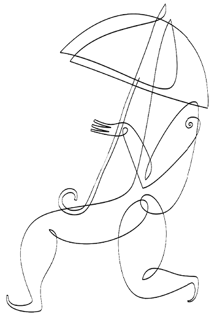
KADERİNİ SEV
“Eğer hayat, Yaratıcı’nın bir sınavı ise, benim sorularım neden bu kadar zor?” Bu cümle, bir mektubun, elektronik iletiyle gönderilen bir iç dökmenin ortasından zıpkın gibi fırlayarak yüreğimi deliyor. Ve işte onu yazan kişi, mektubunu okuyalı bir hafta bile olmadan karşımda oturuyor.
Bir Avrupa kentinden, içinde ancak kırıntılarını saklayabildiği ümidin yorgun kanatlarıyla gelmiş. Dudaklarına iki damla su değmezse, uzun kanat çırpışların ardından vardığı o sahilde hemencecik can verecek bir kuş gibi bitkin. Yüreğinin sızısına nihayet bir çare, hayatına bir derkenar, her şeyi toparlayıp denkleyecek bir formül bulmak ümidiyle karşımda oturuyor.
Yirmili yaşlarını bitirmek üzere olan bu genç kadın, Avrupa’da doğup büyüyen ikinci nesil Türklerin çalışkan bir örneği. İyi bir okul bitirmiş. Çalışma hayatında hep övgüler alıyor. Ama babacığının ani ölümüyle ağır bir depresyonun pençesinde buluyor kendisini; yıllarını alan, onu hayata küstüren bir zifiri karanlık. Hüsrev Hatemi bir şiirinde, “Çünkü her Türk, yüreğine acılar dokuyan bir tezgâhtır” der. Yüreğinize acılar dokuyabilmek için, bir yüreğinizin olması gerekir. Biz kalbin çocuklarıyız. İç hayatlarımız, dünyanın neresinde olursak olalım, Anadolu’nun türkü ve öyküleriyle şekil bulur, bu toprakların öyküleri ruhlarımızı mayalar.
İyi çalışır, planlarımızı dikkatlice yapar ve doğru araçları, bilim ve teknolojiyi kullanırsak başaramayacağımız şey yoktur sanırız.
Dünyaya kalbiyle sokulanlar çabuk yaralanır; kalp hassastır, hile bilmez. İşte hayatı kalp yordamıyla tanımaya başlamış bu genç kadın, üç dört yıl sonra toparlanmış ve hayata tutunmaya başlamıştır. “Kapanmaz yağmurun açtığı yaralar çocuklarda” diyor İsmet Özel, babaların gidişinin açtığı yara da kız çocuklarının yüreğinde şifa bulmaz. Ama o direngen genç kadın, yıllarını alsa da, kederin dipsiz kuyusundan çıkıp gökyüzünü göreceği bir vadiye tırmanıyor. Ve o vadide hayatının ikinci kara haberini alıyor, kanser.
Tam da dünyanın daha iyi bir yer olabileceğine inanmaya başlamışken. Depresyonun dev dalgaları bu kez tsunami şiddetinde dövüyor ruhunun kıyılarını. “Ben hep iyi bir insan oldum” diyor, “bunu hiç hak etmedim.”
Hayatımızın kontrolden çıktığı yerler, kaderin ansız dönemeçleri ruhumuzu kimileyin fena sarsıyor. Şimdi ilaç tedavisini başarıyla tamamlamış ve hastalığı yenmiş olsa da bununla teselli bulamıyor. Hayatın önden kestirilemezliği, ele avuca gelmezliği ve insanın kaderine her zaman hükmedemediği bilgisi, bir kez içinde yer etti. Bu bilgi ağzının tadını bozuyor, onu dünyayı yurt edinmekten, burada kök salmaktan alıkoyuyor. O kaderinin dizginlerini eline almak istiyor, kadere hükmetmek, hayatını kontrol edebilmek istiyor. Oyunbozan ölüm, bunu ona çok görüyor. O yüzden sevemiyor; ya sevdiği insan ölür giderse? Her sokak başında yolunu ölüm kesiyor.
Ölümün yanı başında, ondan bir adım ötede yaşadığımız bilgisi, bizi endişelendirir ve işte bu yüzden, dünyanın kontrol edilebileceğine inanmak isteriz.
İnsan, değiştiremeyeceği karşısında, kaderine rıza göstermeyi bilmeli. “Kaderini sev” demişti Nietzsche, “kaderini sev ki o senin hayatındır.”
Kontrol ihtiyacı insanda doğumdan itibaren var. Hayatın ilk aylarından itibaren çocuklar çevreyi kontrol etmek ve ona boyun eğdirmek isterler. Pek çok yetişkin de dünyanın kontrol edilebilir olduğuna inanır. İyi çalışır, planlarımızı dikkatlice yapar ve doğru araçları, bilim ve teknolojiyi kullanırsak başaramayacağımız şey yoktur sanırız. Afetlerin, hastalıkların, ekonomik ve toplumsal sorunların hep çözülebilir sorunlar olduğuna inanırız. Çalışıp çabalarsak başaracağımıza ve tembellik edersek başarısız olacağımıza eminizdir, bu yüzden başarısızlığı bir tembellik belirtisi olarak değerlendiririz. Pek çok insan kaosun ve beklenmedik olanın hayatlarının seyri üzerinde bir rol oynayabileceğini kabul etmez. Ernest Becker, Denial of Death (Ölümün İnkârı) adlı kitabında, dünyanın kontrol edilebilirliği ve muntazamlığı yolundaki görüşümüzün, bizi kendi ölümlülüğümüzle yüzleşmekten koruduğunu öne sürer. Ölümün yanı başında, ondan bir adım ötede yaşadığımız bilgisi, bizi endişelendirir ve işte bu yüzden, dünyanın kontrol edilebileceğine inanmak isteriz.
İnsan, değiştiremeyeceği karşısında, kaderine rıza göstermeyi bilmeli. “Kaderini sev” demişti Nietzsche, “kaderini sev ki o senin hayatındır.”
Hepimiz kırılgan varlıklarız. Hayat hakkında bir düş kuruyoruz, sevdiklerimizle sonsuza dek birlikte olacağımızı, bela ve musibetlerin bize erişmeyeceğini hayal ediyoruz. Oysa hayat yordanamıyor. Ani sıçrama ve kırılmalarla seyri birden değişebiliyor. Hayat ırmağımız, bazen karmaşalar, beklenmedik olaylar, tesadüflerle yatak değiştiriyor ve bizi hiç ummadığımız bir menzile ulaştırıyor.
Ona diyorum ki, “Derdini sev, kaderini sev, sana kuyuların karanlığından sonra aydınlığı göstereni sev.”

MODERN ZAMANLARDA AİLE
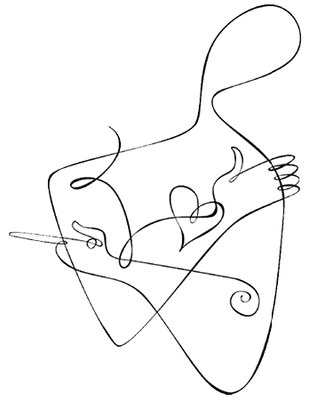
ANNELİĞE ÖVGÜ
“Hayat” diyordu Kierkegaard, “geriye doğru anlaşılır ama ileriye doğru yaşanır.” Anneler görüyorum, kariyer sahibi kadınlar, iş güçlerini çocuklarını yetiştirmek için bırakmış ve işte şimdi onlar büyüdükten sonra, sanki bir pişmanlık dalgası ruhlarının örsüne çekiç olup vuruyor.
Kimse size iyi bir anne olduğunuz için aferin demez, ama iyi yazarlar, iyi doktor veya iyi öğretmenler aferin alır. Tuhaf şeydir, işlerimiz bize bir kimlik verir ama annelik veya babalık vermez. Yine de pek çok anne bebekleriyle geçirdikleri o rüya anlarını hiçbir şeye değişmek istemez. Pişmanlık gibi görünen şey aslında sahici değildir; yası tutulan, geçip giden yılların hatırasıdır. Bir değişme imkânı olsa, pek çoğu bebekleriyle geçirdikleri ömür parçasını, sağlam bir kariyer karşılığında geri vermeye yanaşmayacaktır. Bu yazıyla iyi annelere, çocuğu için kendisinden verebilen, çocuklarını cömert bir sevgiyle büyüten ve modern dünyada hep hakları yenen annelere bir selam vermek istiyorum.
Sinir bilimlerindeki en heyecan verici gelişmelerden birisi, yaşantıların biyolojiyi değiştirebildiğinin gösterilmesi. Anne baba çocuğun sinyallerine cevap verdiğinde, pek çok önemli biyolojik sürece de katılmış olur. Anne ve baba ona cevap vermekle, onunla ilişki kurmak ve oyun oynamakla, çocuğun sinir sisteminin aşırı stres yaşamayacak şekilde olgunlaşmasını sağlar. Böylece, beynin ön bölgesinde prefrontal korteks adlı bölge eksiksiz gelişir ve çocuk ilerleyen yıllarda sosyal davranmasına yardımcı olacak şekilde bilgileri zihninde tutmayı, duyguları üzerine düşünmeyi, dürtülerini sınırlamayı öğrenir.
Kimse size iyi bir anne olduğunuz için aferin demez, ama iyi yazarlar, iyi doktor veya iyi öğretmenler aferin alır. Tuhaf şeydir, işlerimiz bize bir kimlik verir ama annelik veya babalık vermez. Yine de pek çok anne bebekleriyle geçirdikleri o rüya anlarını hiçbir şeye değişmek istemez.
Hayatın ilk yılında beyinde pek çok bağlantı gerçekleşir. Hızla gerçekleşen bağlantılarla sinir ağları oluşur ve bu hammaddeden zihin ortaya çıkar. Hücreler sistemde yerlerini alır ve kullanılmazlarsa ölürler. Bu işleme ‘budanma’ adı verilir. Beyin, yararlı olanı tutar, artık işine yaramayacak olanın da gitmesine izin verir. Beyinde o kadar çok bağlantı üretilir ki bunların içinde bazı örüntüler belirir. En sık ve yineleyici yaşantılar, belirli yolları oluşturur; kullanılmayan bağlantılar budanır. Beyin böylece şekil alır. Özellikle sosyal zekâ, altı ile on sekiz ay arasındaki ilişkilerle şekillenir. Yineleyici ve tipik yaşantılar beyni yapılandırır. Bir baba eve her akşam belirli bir saatte gelip onu kollarına alır ve severse, bebek babadan beklenen davranışın bu olduğunu düşünmeye başlar.
Olması gereken yerde olmayan, ihmalkâr, saldırgan anne babaların çocuklarının duygusal gelişimlerinde bir tutukluk olabileceğini biliyoruz. Evet, bu çocuklar normal bir biçimde gelişebilir ve zekâ bakımından da üstün yetenekler gösterebilirler ama duygusal açıdan kötürüm kalırlar.
Bebekler en tuhaf ortamlarda bile, kendilerine yeterince dikkat gösterilirlerse serpilirler. Sorun, dikkat olmadığında veya dikkat eleştirel veya düşmanca bir hüviyet kazandığında ortaya çıkar. Düşmanca davranan, eleştirel, ihmalkâr anne babalar büyük olasılıkla stresli anne babalardır ve kendileri de iyi bir çocukluk geçirmemişlerdir. Bu önemlidir, zira bebeğin sinir sistemi hayatın ilk evrelerinde çok duyarlıdır. Erken yaşantılar, beynin biyokimyasını değiştirebilir. Yeterince dikkat görememiş bebekler, adeta güçsüzlük ve çaresizliklerini zorla kabullenmek durumunda kalırlar. Bebek ağladığında hemen yanında beliren bir anne ile, önce çayını kahvesini bitiren sonra onun yanına giden anne veya bebeğinden olumlu biçimde söz eden anne ile ondan bir ‘başağrısı’ gibi yakınan anne, çocuklarının gelişimine çok farklı etki ederler. Olması gereken yerde olmayan, ihmalkâr, saldırgan anne babaların çocuklarının duygusal gelişimlerinde bir tutukluk olabileceğini biliyoruz. Evet, bu çocuklar normal bir biçimde gelişebilir ve zekâ bakımından da üstün yetenekler gösterebilirler ama duygusal açıdan kötürüm kalırlar.
Anne ve babanın bebekle kurduğu iletişim, yeni sinir hücrelerinin, yeni sinir yollarının, yeni budaklanmaların oluşmasını sağlar. Yineleyici yaşantılarla öğrenme olur. Bebek ilişki kurdukça, yakın ilişkilerinde diğer insanlardan ne beklemesi gerektiğini öğrenir. “İnsanlar duygu ve ihtiyaçlarıma cevap veriyorlar mı yoksa onları saklamam mı daha doğru olur? Bana duygularımı düzenlemek konusunda yardım mı edecekler, yoksa beni hayal kırıklığına mı uğratacaklar?” İnsan olarak temel psikolojik örgütlenmemiz, hayatımızın ilk ay ve yıllarındaki yaygın deneyimlerle şekillenir.
Bebeğin hayatında önemli saydığı kişilere duyduğu itimat, hayatının ileriki evrelerinde, karşısına çıkan zorluklarla baş edebileceği inancında kendisini gösterir. Kendini kelimelerle, müzikle, farklı uğraşılarla yatıştırabilen insanlar, hayatın çeşitli dönemeçlerinde bozulur gibi olan dengelerini tesis ederler. Bu düzenleyici yetenekler sayesinde insanlar, duygusal açıdan sağlıklı bir ömür sürerler. Ruhsal sıkıntılar, bu iyileştirici düzenekler çalışmadığında ortaya çıkar.
Günümüz toplumunda depresyonun giderek arttığını, bir salgın boyutuna tırmandığını biliyoruz. Bunu gibi antisosyal davranış da kitlesel düzeyde tırmanış gösteriyor. Amerikan Psikiyatri Birliği’nin eski başkanı ve tanınmış araştırmacı Nancy Andreasen, bu durumu hayat tarzlarımızın giderek daha stresli olmasına bağlıyor. Hayatlarımız giderek daha rekabetçi esaslara göre tanzim ediliyor, insanlara rehberlik edecek değerler belirsizleşiyor ve giderek bir şüphe ve maddecilik çağında yaşıyoruz. Her geçen gün daha fazla anne çocuklarını bakım evlerinin veya bakıcıların hizmetinden yararlanarak büyütüyor. Anne babaların çok uzaklarda ve hep meşgul olduğu evlerin yalnız çocukları, duygularını yerli yerince düzenlemeyi öğrenemeden büyüyor. Bu yüzden günümüzde gençler arasında intihar davranışı veya madde kullanımının yaygınlaştığını görüyoruz. Modern hayat bize ilişkinin değil işin öncelikli olduğunu telkin ediyor. Oysa çocukların anne babalarıyla çok yakın ilişkiye ihtiyaçları var. Erken dönemlerinde anlamlı bir bağlanma ilişkisi geliştirememiş kişiler, başka insanlarla özdeşim kuramıyor. Bu kişiler başka insanların da gerçek duygularının olabileceğini fark edemiyor ve bazen ölçüsüz saldırganlık gösterebiliyorlar. Yeterince sevilmemiş gençler, gün geliyor bir cep telefonu için bir başka genci hunharca bıçaklıyorlar. Böylesi bir acımasızlık, ancak karşındakinin bir insan olduğunu, onun ‘gerçek’ olduğunu, sahici duygularının bulunduğunu görmezden gelerek yapılabilir. Bebekliklerinde kendilerine kötü davranılmış kişilerin ileride daha az empati yeteneği gösterdiklerini biliyoruz.
Anne babaların çok uzaklarda ve hep meşgul olduğu evlerin yalnız çocukları, duygularını yerli yerince düzenlemeyi öğrenemeden büyüyor. Modern hayat bize ilişkinin değil işin öncelikli olduğunu telkin ediyor.
İyi anneler çocuklarını dinler, onlara dikkat eder, davranışlarını biçimlendirir ve bedensel, duygusal veya zihinsel temas yoluyla çocuklarında iyi duyguların oluşmasını temin eder. Bir dokunuş, bir gülümseyiş, duygu ve düşünceleri kelimelere dökme tarzı çocuğun iç dünyasında yankılanır. Başkalarının duygularını fark edip ona cevap verebilmek, zaman ister. Duygulara yer ve imkân verecek bir zihinsel uzaya gereksinir, ilişkileri önceleyen bir arzululuk haline ihtiyaç duyar. Bu da hedef yönelimli toplum için bir meydan okumadır. Bu toplum bize, “duygulara dikkat kesilip de yavaşlama, aman hız kesme, hedefleri erteleme” diyor.
Modern dünyanın değersizleştirdiği anneliği yeniden yüceltmeli, anneliği övmeliyiz. Çalışma hayatı annelerin ihtiyaçlarına göre çok esnek biçimlerde düzenlenmeli, toplumsal hayat annelerin çocuklarına yeterli ilgi ve bakımı verebileceği şekilde ayarlanmalıdır.
Toplumsal ve ruh sağlığıyla ilgili pek çok sorunun özünde anne babalığın iyi bir biçimde yapılmaması yatıyor. Oysa bizim çocuklara hayatta karşılaşacakları sorunları çözme konusunda yeterli duygusal teçhizatı sağlayabilmemiz gerekiyor. Bunun için emzirmenin yine baştacı edilmesi, bebekli annelerin evlerde yalnız bırakılmak yerine daha çok sosyalleşmelerinin sağlanması icap ediyor. Yetersiz annelik bundan sonraki nesillerde kendisini tekrarlayacak bir sağlıksızlık demektir. Annelik önündeki tüm zorlayıcı engeller kaldırılmalı, anneler baştacı edilmeli, anne çocuk etkileşiminin en üst düzeyde olması sağlanmalıdır.
Antidepresan ilaç masrafı dünyada her yıl milyarlarca dolar tutuyor. Oysa sorunu ta kaynağında çözmek mümkün: Her bebeğe ihtiyaç duyduğu ilgi ve dikkati vererek, iyi anne babalık sağlayarak pek çok ruhsal sorunu önleyebiliriz. Modern dünyanın değersizleştirdiği anneliği yeniden yüceltmeli, anneliği övmeliyiz. Çalışma hayatı annelerin ihtiyaçlarına göre çok esnek biçimlerde düzenlenmeli, toplumsal hayat annelerin çocuklarına yeterli ilgi ve bakımı verebileceği şekilde ayarlanmalıdır.
Kutlu nebi sözü, cenneti annelerin ayakları altına seriyor. Çocuğun cenneti de, gözleri şefkatle ışıldayan bir annedir.
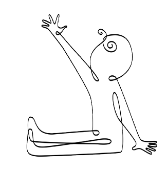
ELİNİ TUTMAK İSTİYORUM
Haberleri izliyorum. ‘Kimsesiz’ çocuklar için düzenlenen yeni yıl kutlamasında, çocuklara yeni yılda ne istedikleri soruluyor: Biri, “Öğretmenlerimizin yeni yıla aileleriyle mutlu bir biçimde girmelerini isteriz” diyor. Bir diğeri, öğretmenleri için daha iyi maaşlar diliyor.
Kameralar karşısında, kendi dileklerini değil de tembihlenmiş sözleri söyleyebilecek kadar cömert çocuklar. Bir şey istemeyi unutmuş çocuklar. Oysa bir evleri ve bir anneleri olsaydı, sımsıkı tutacakları bir el olsaydı, içinde çocukların koşuşturduğu bir ev resmini hiç sektirmeden çizebilselerdi, onların da kendileri için isteyebilecek bir şeyleri olacaktı.
9 Şubat 1964. Beatles Amerikan televizyonunda canlı yayında ve Kennedy öldürüleli henüz iki ay olmuş. “I want to hold your hand” şarkısı kıtada büyük bir duygu seli yaratıyor, bu şarkı ve onu izleyen duygusal atmosfer belleklere kazınıyor. “Elini tutmak istiyorum” diyor grup, güçlü bir özlem duygusuyla. “Sana dokunduğumda içimi bir mutluluk sarıyor.” Yüzeyde bir aşk şarkısı gibi görünüyor, alt yazıları okuduğunuzda kederli ve bağımlı bir çocukla karşılaşıyorsunuz, uzak veya belki de olmayan bir anneyi arayan, onu çıldırasıya özleyen bir çocuk.
Hissedilmemiş çocuklar, incinmiş çocuklar. Onlardan başarmaları bekleniyor. Rekabetçi analarının soluğu enselerinde. Kırılgan ve güvensiz egoların çığlığı: “Elini tutmak istiyorum. Ancak elini tutmakla içimin yaralarını iyileştirebilir, ancak sana dokunmakla yatışabilirim.” Kendisine acıyan bir kuşağın anneyi arayışı bu şarkıda cisimleşiyor.
Dünya üzerindeki pek çok toplum, aileyi ‘kalpsiz bir dünyada son sığınak’ olarak görür ve onun kalbi ve ruhu olarak anneyi korur, destekler ve kutlar. Modern dünyada anneliğin de tenzil-i rütbeye uğratıldığını görüyoruz. Annelik artık bıkkın, özgüveni düşük ev kadınlarının mesleğidir. Çocuk çok fazla zaman ve adanmışlık istiyor, ona verilecek zamanın maliyeti kariyer yürüyüşünde uzun bir duraklama olacaksa, kadın annelik konusunda mütereddit kalıyor.
Hissedilmemiş çocuklar, incinmiş çocuklar. Onlardan başarmaları bekleniyor. Rekabetçi analarının soluğu enselerinde. Kırılgan ve güvensiz egoların çığlığı: “Elini tutmak istiyorum.”
Modern psikolojiyle birlikte annenin kadim zamanlardan farklı bir resmiyle de karşılaşıyoruz. Çocuğuyla arasındaki psişik göbek bağını kesmeye bir türlü yanaşmayan o hain gölge. Çocuğun mutsuzluk ve endişesi ona fatura edilir ve çocuklarının ruhunu emerek beslenen ‘vampir’ anne, hedef tahtasına yerleştirilir. Bir ara o kadar ileriye gidilir ki, söz ve mesajlarıyla çocuğunu şizofren eden annelerden bile bahsedilir. Neyse ki sonraları birkaç insaf sahibi çıkmıştır da anneye iade-i itibarda bulunulmuştur. Anne çocuk için o kadar vazgeçilmezdir ki ustalardan Winnicott diye bir adam, “Bebek diye bir şey yoktur” demiştir, yani anne ve bebek vardır, tek başına bebek değil.
Çocuklar ellerine kâğıt kalem aldıklarında bir yuva, bir ev resmi çizerler. Dış dünyanın olanca karmaşıklığına rağmen ev, düzeni temsil eder. Ev, sükûnet ve huzur demektir. Ana kucağı, yorgunluk ve korkulardan kaçılıp dönülecek bir emniyet üssü, bir hayat kaynağıdır. O orada olduğu için çocuk adım atar. O kendisini beklediği için çocuk evin dışına gitmeyi göze alır. Bir hayat boyu anacığımız yanımızda olsun ve gerek duyduğumuzda elini tutabilelim isteriz. Dünyayı onun yüzünde okuruz. Küçücük bir bebekken onun hüznünden anlarız tatsız bir halde olduğumuzu, onun gözündeki ışıltılarla kendi sevinç ve coşkumuzu keşfederiz. Analarımız aynalarımızdır.
Ev, sükûnet ve huzur demektir. Ana kucağı, yorgunluk ve korkulardan kaçılıp dönülecek bir emniyet üssü, bir hayat kaynağıdır. O orada olduğu için çocuk adım atar. O kendisini beklediği için çocuk evin dışına gitmeyi göze alır.
Modern dünyada birey inzivaya çekildiği, sessiz ve yalnız kalabildiği bir özel köşesi olsun istiyor. Dünyanın sağanak halinde yağan gürültüsünden kaçtığında, onu itirazsız bir sessizlikle karşılayacak bir yuvası olsun. Çocuklar ancak sığınacak bir evleri ve onları saracak bir ana kucağı varsa varlıklarını hisseder ve dünyadan bir şey isteyebilirler. Çocuğun tutacak bir el aradığı gibi, o el de hep tutacağı çocuğu arar. Hayat bir tamamlanma arzusudur.
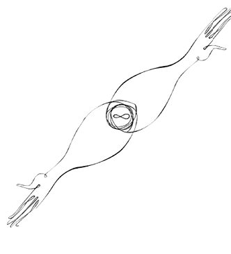
BABALAR VE OĞULLAR
Oğulların öyküsü babaların öyküsünün tam kalbinden geçer. Babalarımız hayatta kim olduğumuzu, nasıl durduğumuzu, nereye ve nasıl baktığımızı tayin ederler. Statükocu babaların oğulları devrimci olabilir, büyük inanmışlardan inançsız evlatlar zuhur edebilir.
Erkek çocukları için hayat, baba ve annenin çocukluğa attıkları ilmiklerin çözüldüğü bir serüvendir. Sözgelimi baba, oğlunun ruhunda öyle kocaman bir yara açmış, onu varlığıyla o kadar sindirmiştir ki oğul bir türlü büyüyemez, yetişkinliğe adım atamaz, ebedi bir ergen olarak kalır. Etrafından hep bir baba azarı yiyebileceği korkusuyla hayatı kıyısından köşesinden yaşar, içinde babayla yaşanmış ve mağlubiyetle bitmiş bir savaşın ukdesi dolaşır, bu ukde ruhun kıyılarını döven depresyon dalgalarıyla varlığını hatırlatır. Baba kimileyin o kadar kuvvetli bir gölge düşürür ki oğlunun hayatına, ayrımlaşmayı ve bağımsızlaşmayı başaramayan oğul; babanın bir uzvu, bir uzantısı olarak, bir gölge olarak yaşamaya devam eder.
Oğulların öyküsü babaların öyküsünün tam kalbinden geçer. Babalarımız hayatta kim olduğumuzu, nasıl durduğumuzu, nereye ve nasıl baktığımızı tayin ederler.
Bazen de baba yoktur. Ya fiziksel olarak orada değildir ya da fiziksel olarak orada olsa bile, ruhsal olarak yoktur. Oğul, bir baba açlığı içinde, dış dünyadan babaya ait bütün simgeleri ruhuna emer. Babasız büyümek, çocukların iç dünyalarına bitmek bilmeyen bir gurbet acısı olarak tercüme edilir. Babadan gurbet, bir oğul için gurbetlerin en yakıcısı, en iç paralayıcısıdır. Soğuk ve mesafeli babalar, çocuk ruhunun biricik gıdası olan şefkat ve sevgiyi oğullarından esirger ve onları hayat boyu telafi etmekte zorlanacakları bir açlığa mahkûm ederler. Güçlü babaların ihmale uğramış oğulları, geçmişin yaralarını iyileştirmek için babalarının tam aksi politik duruşlar, inanışlar ve yaşayışlara yelken açar; farklı olmayı başarmak ve savaşa devam etmek suretiyle, erkeklik ülkesine girmek isterler.
Oğulların davası erkek olabilmektir. Erkeklerin arasına kabul edilebilmek, yetişkin bir erkek olarak ayakta durabileceklerini, babalarına ve hemcinslerine göstermek. Endüstri toplumuyla birlikte geleneksel ritüeller kayıplara karışmış, erkekliğe adım atışın yegâne simgesi baba evinden ayrılmak olmuştur. Bugün Batı toplumlarında pek çok genç, yetişkinliğe adım atmanın olmazsa olmaz koşulu olarak görülen bu modern ritüelle, anne baba sevgisini doyasıya yaşayamadan, anne babalarıyla ilişkilerini tam olarak çözümleyemeden erken bir biçimde hayata atılmakta, bu durum da ruhsal anlamda ‘bitmemiş bir iş’ bırakmaktadır. Türkiye’ye baktığımızda ise tam tersine, anne ve babanın sunduğu güvenlik duygusundan vazgeçmeye yanaşmayan, hayatın sorumluluklarını hep erteleyen, ebedî ergenlerin yaygın olduğunu görüyoruz. Zalim bir dünyada, oğulların erkekliğe kabulü de acımasız şartlara bağlıdır: İncinmeksizin incitebildiklerinde, üzüntü ve kayıp hissetmeksizin ayrılabildiklerinde erkek kabul edilirler.
Güçlü babaların ihmale uğramış oğulları, geçmişin yaralarını iyileştirmek için babalarının tam aksi politik duruşlar, inanışlar ve yaşayışlara yelken açar; farklı olmayı başarmak ve savaşa devam etmek suretiyle, erkeklik ülkesine girmek isterler.
Çocuklarının gelişim evrelerinde ‘orada olan’ babalar, onlara ne büyük bir iyilik yapıyorlar! Babaları kendileriyle ilgilenen çocuklar duygularını daha iyi düzenliyor, daha yüksek toplumsal ve eğitimsel başarı gösteriyorlar. Babalar çocukları, hayal kırıklıklarına tahammül ve işleri kendi başlarına çözme konusunda daha fazla cesaretlendiriyor. Baba sevgisini doyasıya tadan çocuklar duygusal açıdan daha istikrarlı, daha az öfkeli, kendilerine güvenen ve dünyaya daha olumlu bakan bireyler oluyor. Öte yandan, ‘yok baba’ların çocuklarında daha fazla madde kötüye kullanımı, depresyon, intihar ve daha düşük okul başarısı görülüyor.
Günümüzün dünyasında babalık da değişiyor. Erkeklikle özdeşleştirilen kimi temel nitelikler ağır bir biçimde eleştiriliyor. Güç ve savaşkanlığın pek çok rahatsızlığın kökeninde yattığı ve erkekliğin bu ‘arkaik’ görünümlerinden uzaklaşılması gerektiği dile getiriliyor. Bu görüş bize eşduyum, bağlılık, duyguları hissedebilme gibi dişil hasletlerin artık erkek kişiliğine de katılması gerektiğini anlatıyor. Günümüz toplumunda hiyerarşiler de alt üst oluyor, geçmiş zamanlarda insanlar kendilerini hiyerarşinin bir basamağında hissetmekle emniyet bulurken günümüzde iktidar yapılarının daha akışkan ve değişebilir, daha uzlaşmaya açık olduğu görülüyor. Bugünün anne babalarının kafası her zamankinden karışık. Çocuklarına ne demeleri gerektiğini, nasıl davranmalarının doğru olduğunu bilmeyen bir anne baba kuşağı ile karşı karşıyayız.
Güç ve savaşkanlığın pek çok rahatsızlığın kökeninde yattığı ve erkekliğin bu ‘arkaik’ görünümlerinden uzaklaşılması gerektiği dile getiriliyor. Bu görüş bize eşduyum, bağlılık, duyguları hissedebilme gibi dişil hasletlerin artık erkek kişiliğine de katılması gerektiğini anlatıyor.
Freud’un ‘fallosentrik’ psikolojisi, kadını erkek olma özlemi içinde bir varlık olarak tanımlıyordu. Freud’a kalırsa kadınlar erkeklik uzvuna sahip olmadıkları için haset duyuyorlardı. Yakın zamanların ‘duyarlı erkek’ hareketi de, erkekleri kadın olma özlemi içinde tanımlıyor. Bu görüş, erkeklerin de kadınlar gibi daha empatik, daha bağlı, daha şefkatli ve anlayışlı olmaları gerektiğini söylüyor. Ancak tam da bu sırada beyazperdede Terminatör veya Rambo gibi hiper erkekler görmeye başlıyoruz. Geleneksel erkek kimliğinin üzerinde dolaşan kara bulutlar, erkeğin iade-i itibar talebiyle dağılmaya yüz tutuyor. Kimi erkekler farklılık ve fiziksel üstünlüklerinin kabullenilmesini istiyor. Erkeğin serencamı, babanın kafa karışıklığına dönüşüyor. Otoriter mi olsun, arada bir gürlesin ve iktidarını mı göstersin, yoksa her sorunu konuşarak ve uzlaşıyla mı çözsün? Geleneksel rollere mi bağlı kalsın, yoksa babalığın modern hallerine mi seğirtsin?
Babalar ve oğullar cephesinde yeni bir şey var. İkisinin de kafası çok karışık.
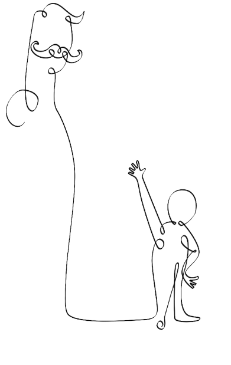
BABA: O EŞSİZ GÖLGE
Baba-oğul ilişkisi, psikanaliz ve psikiyatrinin ilgi alanlarından birisini oluşturuyor. Freud’un babayı oğula rakip gören ‘ödip karmaşası’ düşüncesi bugün evrensel bir durum olarak tanımlanmıyor. Babalık için ‘toplumsal bir kaza’ diyen Margaret Mead’in görüşleri de rağbet görmüyor.
Artık babalık, çocukların büyüme sürecinde duygusal ve zihinsel anlamda büyük sonuçları olan, karmaşık ve eşsiz bir olgu olarak hak ettiği değeri buluyor. Babalık üzerine yapılan araştırmalar, baba-çocuk bağının, anne-çocuk bağından nasıl farklılaştığını gösteriyor. Bu yazıda önce baba-çocuk etkileşimine değinecek, daha sonra babalar ve oğullar arasındaki o ‘yakıcı’ ilişkiyi konu edineceğim. Bu yazıyı bir oğul olarak yazıyorum, kendisinin de iki oğlu olan bir oğul.
Babanın anneden daha oyuncu yapıdaki etkileşim biçimi, çocuğa duygusal özdenetimi öğreten bir alan olabilir. Baba-çocuk etkileşimi, çocuğun ileriki hayatında da kendisini güçlü ve etkin hissetmesini sağlayacak bir anahtardır. Fakat babalık davranışını, annenin yöntemlerinden ayırmak o kadar da kolay bir mesele değildir. Baba-çocuk bağlanmasının özü farklıdır. Özsaygısı düşük olan babaların çocukları üzerinde gösterdikleri olumsuz etki, kendisiyle barışık olmayan annelerin olumsuz etkisinden daha fazladır. Ayrıca ebeveynler arasındaki çatışma boyunca, baba-çocuk bağı daha soğuk, daha kolay bozulabilir nitelikte görünmektedir.
Babanın çocuğun bilinç ve cinsel kimlik gelişiminde önemli bir yeri olduğunu savunan Freud, babanın çocuğun hayatının ilk üç yılındaki yerini hesaplamamıştır. Ondan sonra pek çok kuramcının tartıştığı gibi aslında baba figürü, evin dışında varolan bir dünyada -gerçek dış dünyada- disiplinin, erkek rol modelinin kazanılması gibi noktalarda önemli bir etkiye sahiptir. Anneler çocuklarını her türlü olumsuzluktan koruma çabası gösterirken, babalar daha gerçekçi davranır ve dış dünyanın sert bakış açısını öğretmeyi hedefler.
Özsaygısı düşük olan babaların çocukları üzerinde gösterdikleri olumsuz etki, kendisiyle barışık olmayan annelerin olumsuz etkisinden daha fazladır. Ayrıca ebeveynler arasındaki çatışma boyunca, baba-çocuk bağı daha soğuk, daha kolay bozulabilir nitelikte görünmektedir.
1920’lerde anne merkezli görüşlerde yaşanan kırılmalar sadece deneysel bulgulara bağlı olarak ortaya çıkmamış; bu döneme kadar çocuklarda yaşanan her türlü duygusal ve davranışsal problemin sebebi annede aranırken, giderek babanın sorumlulukları da tartışılmaya başlanmıştır. 1950’lerde ise, bilim, babanın erken çocukluk döneminde çocuk üzerindeki etkilerini tartışmaya başlarken, bunlar hep boşanma ya da babanın yokluğu gibi negatif içerikli durumlar üzerinden yapılmıştır. 1970’lerde, araştırmalar bakım verme konusunda babanın yeterliliğinin anne kadar olup olamayacağını sorgulamaya başlamıştır. Bu soruya verilen cevap, herkesin şaşkınlığına rağmen ‘evet’ olmuştur. Ancak burada eksik olan bir şey vardır; babalar da anneler kadar iyi bir bakım veren olabilirler ancak onlar bazı görevleri annelere bırakma eğilimi taşırlar. Daha sonraki araştırmalar, buradan hareketle kadın ve erkeklerin ebeveynlik stratejilerinin nasıl ve niçin farklılaştığına ve bunun çocuk için ne anlama geldiğine odaklanmıştır.
Çocuk, babasının yüz ifadelerinden, sesinin tonundan ve sözel olmayan diğer işaretlerinden onun duygularını nasıl ‘okuyacağını’ öğrenir ve buna göre cevap verir. Kendi duygularını net bir şekilde başkalarına nasıl ileteceğini görür.
Araştırmalardan çıkan sonuçlara göre, çocuklar hayatın ilk birkaç yılında babadan etkilenmeye gayet açıktır. Bebekler beslenme ve rahatlığa dair temel uyaranları alırken sadece eğlenmemekte, aynı zamanda zihinsel, fiziksel ve özellikle duygusal gelişimleri için buna ihtiyaç duymaktadırlar. Babalar çocuklarıyla oyun oynarken, kovalamaca, güreş gibi fiziksel etkileşimlere başvururlar; anneler ise, oyuncaklarla etkileşim ve sözel değiş-tokuşlar gibi iletişim türlerini kullanırlar. Buna göre babalar, pozitif veya negatif, memnuniyeti olduğu kadar korkuları da içerecek şekilde, çocuklarını duygularını düzenlemeyi öğrenmeye zorlar. Dolayısıyla klasik teorinin tartıştığı gibi, babalar çocuklarının anne-çocuk ilişkisi dışındaki dış dünyaya hazırlanmasını sağlar ancak bundan daha fazlasını da yaparlar: Çocukların karmaşık etkileşim becerilerini, ‘duygusal iletişim’ becerilerini geliştirmelerini sağlayan şey daha çok baba-çocuk etkileşimidir.
Bunu kazanmanın birinci basamağında, çocuk, babasının yüz ifadelerinden, sesinin tonundan ve sözel olmayan diğer işaretlerinden onun duygularını nasıl ‘okuyacağını’ öğrenir ve buna göre cevap verir. İkinci basamakta ise, kendi duygularını net bir şekilde başkalarına nasıl ileteceğini öğrenir. Son olarak çocuklar, kendi duygusal durumlarını nasıl ‘dinleyeceklerini’ öğrenirler. Tüm bu zincirin doğru bir şekilde işlerlik kazanması ise, çocuğun ileriki yıllarda engellenmeyi yönetebilme, tutarlı bir problem çözme becerisi geliştirebilme, yeni faaliyet ve şeylere uyum gösterebilme gibi özellikleri kazanabilmesini sağlar. Baba-çocuk arasında gelişen bu olumlu ilişki bağı, önce kardeşlere sonra da arkadaş çevresine yansır ve çocuk daha işbirlikçi, daha az kavgacı bir tutum sergiler.
Ebeveynlerin çocuklarıyla beraber geçirdikleri zaman dilimlerine bakıldığında, babaların annelerden daha fazla oyunla zaman geçirdikleri görülmektedir. Bunun bir sonucu olarak çocuklar, 1-1,5 yaşlarında sıkıntı verici bir durumla karşılaştıkları zaman, birincil bakım verenleri olan annelerine dönerler. Fakat bağlılık davranışı olarak kabul edilen gülümseme, ses çıkarma gibi davranışlarda, tutumları babadan yana olmaktadır.
Çocuğun ilerleyen yaşlarında bu bağlanma biçimlerinde bazı değişiklikler yaşanır. Araştırmalara göre, onlu yaşlarına gelen her iki cinsiyetten çocuk için, duyarlılık, güven ve ihtiyaçlar söz konusu olduğunda tercih edilen ebeveyn, bebeklikte olduğu gibi annedir. Fakat buna karşıt olarak, babaların sunduğu şakacı ve oyuncu yaklaşım, çocukları babalarından uzaklaştırmaktadır. Çünkü böylesi bir yaklaşım tarzı, ileri yaştaki çocuklarda, babalarının kendilerinin ihtiyaç ve düşüncelerini ciddiye almadığı gibi bir izlenim oluşturabilmektedir.
Modernleşmeyle beraber ev ve iş arasında oluşan uçurum, babanın evden kaybolmasına yol açmıştır. Pek çok çocuk için, baba artık kendisi uyuduktan sonra eve gelen bir gölge varlıktır. Oğullar için babadan ayrılık, erkek kimliğinin oluşması bakımından elzemdir. Babanın anahtar rollerinden birisi oğlan çocuğunu erkeklik rolüne, erkeklerin dünyasına, kimliğini bir erkek olarak kurgulayacağı yere hazırlamaktır. Eğer bunu yapamazsa, oğlu kadınlarla ilişki kurmakta çok zorlanacak; ya onlara yapışacak ya da onlardan çok uzak duracaktır. Kimi yazarlar, Endüstri Devrimi’nden en fazla yara alan sevgi biriminin, baba-oğul bağı olduğunu yazmaktadırlar. Endüstrileşme öncesinde oğullar babalarını tarlada veya ticarette görüyor, erken yaşta onlara katılıyor iken artık babalarını bu biçimde görme şansları kalmamıştır.
Pederşahî toplumumuzda gizli saklı bir maderşahîlik hüküm sürüyor; ilişkiler, duygular öne çıkıyor ve oğul babayı duygusuzluğun o gri dünyasından çıkıp gelen bir yabancı olarak değerlendiriyor. Erkek kimliğine kolayca geçebilenlerin babaları, geçmişte onlarla yeterli bir bağ kurmuş, kendi dünyasının bir bölümünü paylaşmış oluyor. Bazıları ise erkek kimliğine adım atıyor ama babalarının o ilişkisizliğini, duygusal ceset olma halini kendi hayatlarına kopya ediyorlar. Bazı erkekler de kadınların dünyasında kalıyor ve onların değerlerini benimseyip erkeklerin dünyasındaki sevgisizlikten nefret ederek yaşıyorlar. Bir oğlun, annesinin kendisi için ve kendisinin annesi için taşıdığı tehlikeye karşı babaya ihtiyacı vardır. Çünkü ana-oğul ilişkisi çok yalıtık kalırsa yoğun ve tahripkâr bir hale bürünebilir. Hasılı kelam, baba eşsiz bir gölgedir.
Modernleşmeyle beraber ev ve iş arasında oluşan uçurum, babanın evden kaybolmasına yol açmıştır. Pek çocuk için, baba artık o uyuduktan sonra eve gelen bir gölge varlıktır.
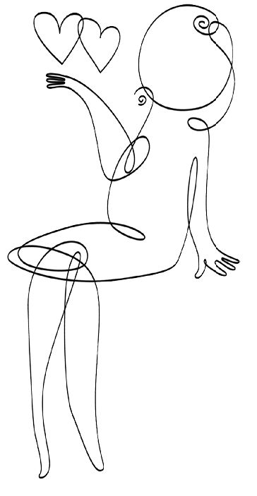
YENİ BİR SPOR DALI: ANNE BABALIK
Anne tedirgin. Çocuğunu bir kurstan ötekine, bale dersinden binicilik dersine koşuşturuyor. Yetmiyor, özel öğretmenlerden evde ders aldırıyor. Bunu yapmak zorunda hissediyor kendisini, çünkü kendisiyle benzeri konumlarda olan hemcinsleri böyle yapıyor.
Bir başkası, dostlarının önünde henüz dört yaşında olan çocuğunun zihinsel becerilerini görücüye çıkarıyor. Çocuğunun bu yaşta aritmetik işlemleri yapabilmesiyle övünüyor. Bu yetenekte elbette kendi emeklerinin payı var, takdir edilsin istiyor. Değil mi ki çocuğu için işinden ayrıldı, bunun yarattığı bir fark olmalı ve bu fark başkalarınca da görülmeli. Bir başka anne, kimse çocuğunu okşamasın, öpmesin istiyor. Babaannesi bile ona fazla yakınlaşsa rahatsızlık duyuyor. Kimden hangi mikrobun geçeceğini bilemeyeceği için, çocuğunu insanlardan yalıtarak korumak istiyor. Türk orta sınıfından üç anne, çocukları konusundaki hassasiyetleriyle bize yeni bir sporun doğuşunu müjdeliyor. Rekabetçi, yorucu, rakiplerinizi her an kollamanızı gerektiren, insana durup dinlenme şansı vermeyen yeni bir spor dalı: Anne babalık!
Anne babalık tarzımız kimileyin kendi endişe ve kafa karışıklığımızı, kimileyin de zamanın kültürel iklimini yansıtır.
İnsan ilişkilerinin pek azının uzun ömürlü olduğu bir zamanda, çocuk müstesna bir duygusal eş olarak görülüyor. Önceleri evlilik, hayat arkadaşlığı, dostluk veya ideolojik dayanışmadan beklenen güven, bugün daha çok çocuktan isteniyor. Evlilik veya dostluğun aksine, bir anne babayı çocuğa rapteden bağlar yitip gitmiyor. Eşler ve arkadaşlar gelip gidiyor ancak çocuk kalıyor.
İşte böyle bir iklimde çocuğun öneminin arttığına, çocukluğun ahlaki bir statü olarak yüceltildiğine tanık oluyoruz. Tanınma arzusu kendisine uygun bir çıkış bulamadığında, insanlar kendilerini çocukları üzerinden geçerli kılmak istiyor.
Yalnızlığın yegâne alternatifi, sevme ve sevilme umudu olarak çocuk. Belirsiz yetişkinler evreninde, çocuklara yapılan duygusal yatırım giderek artıyor. Boşanma ve ayrılmayla hayat arkadaşlığı son bulabilir, ancak çocuklarımız hep bizim çocuklarımız olarak kalırlar. Çocuklarımız, akışkan bir dünyada değişmezlik duygusu sağlayarak bizi endişelerimizden kurtarır.
Tuhaf olan şu ki, orta ve üst gelir katmanlarında yer alan ailelerin bu çocuk kutsaması, evin dış kapısında sona erer. Kendi çocukları konusunda kılı kırk yaran anne babalar, başkalarının çocukları söz konusu olduğunda vurdumduymaz kesiliverir. Sadece kendi çocuklarına yatırım yapar, diğer çocukları görmez ve işitmezler. Anne babaların evin mahremiyetinde çocuklarına yönelttikleri o derin duygu, başka insanların çocuklarına karşı yaşadıkları sorumsuzlukla büyük bir tezat oluşturur.
Çocuğu sürekli bir dikkatin odağında tutmak, ona iyilik etmek anlamına gelmiyor. Daimi bir dikkatle büyüyen çocuklar sorunlarla tek başlarına yüzleşmek, dünyayı tek başlarına keşfetmek, yalnız başlarına oynamak istemeyebilirler. İleride, ilgi odağı olmadıkları durumlarda zorluk yaşayabilirler. Çocuğun imge dünyası, yetişkinlerden uzak ve yalnız kalarak gelişir. ‘Aşırı’ anne babalıktan, çocuğun boş zamanını tıka basa doldurmaktan kaçınmak lazım. Anlayacağınız, gerektiğinde çocuğun yanında olmak ama bazen de ona gölge etmemek gerekir!
Sportmen anne babalara duyurulur.
İnsan ilişkilerinin pek azının uzun ömürlü olduğu bir zamanda, çocuk müstesna bir duygusal eş olarak görülüyor. Önceleri evlilik, hayat arkadaşlığı, dostluk veya ideolojik dayanışmadan beklenen güven, bugün daha çok çocuktan isteniyor. Yalnızlığın yegâne alternatifi, sevme ve sevilme umudu olarak çocuk.

‘SERT’ ERKEĞE VEDA!
Batı toplumlarında bir süredir ilgi uyandıran bir tartışma var: Sert erkeğin öldüğüne, hatta bildiğimiz anlamıyla erkekliğin öldüğüne, erkekliği yeniden tanımlamak gerektiğine dair bir tartışma. Bu tartışma, yaygın kültürün tayin ettiği yetişkin erkek imgelerinin eskidiğini ve artık bunlara güvenilemeyeceğini söylüyor.
Kitabiyattan bir örnek vermek gerekirse şair Robert Bly’ın İngilizce konuşulan dünyada çok satan Iron John (Demir John) adlı kitabı zikredilebilir. Bu kitap talihsiz bir biçimde, Türkçeye Sert Erkek, Güçlü Erkek adıyla çevrildi ve hak ettiği ilgiyi uyandırmadı. Kimi yazarlar ‘erkekliğin buhranı’ndan söz ederken, kimileri de bu tartışmaların toptan bir yanılsama olduğunu dile getiriyor. Bu yazıda, sözünü ettiğim tartışmaları, ruhbilimsel bir bakış açısından ele alacağım.
Cinsiyet (gender) aslında cinsiyet organlarından ve gösterilen cinsel davranışlardan daha fazlasıdır. Toplumun içinde var olan cinsiyet rolleri, ideal erkek veya kadın olmanın sınırlarını ve hedeflerini çizer. Erkeklik, insanlık tarihi boyunca değişik sosyal grupların, kültürlerin ve alt kültürlerin ihtiyaç ve şartlarına göre şekillenmiştir. Toplumlarda görülen erkek standartları, çoğu kez, zamanın yönetici sınıfının tercihlerine ve ihtiyaçlarına hizmet edecek özellikler barındırmaktadır. Bu bakımdan tek bir erkeklik tanımı ve ölçütünden bahsetmek mümkün değildir. Erkeklik aslında süregelen bir grup etkinliğidir. Erkek, doğumundan itibaren hemcinsleri tarafından sürekli bir denetlenme ve inceleme altına alınır. Genelde babalar erkek çocukları için hem erkekliği öğreten bir model hem de çocuğun erkekliğin gereklerini yerine getirip getirmediğini kontrol eden bir denetleyicidir.
Tarih içinde üstün erkek özelliklerinin de değiştiğini ve genel olarak bu özelliklerin zamanın ve mekânın gereklerini karşılayacak biçimde şekillendiğini söylemek mümkündür. Yani üstün erkek, şimdiki zamanın ve şartların ideal erkeğidir. Zaman içinde fazla değişime uğramayan ve günümüze kadar gelen üstün erkek özelliklerinden bazıları; hükmetme, saldırganlık, rekabetçilik, cesaret, sevinç veya kedere karşı kayıtsızlık ve kontrol altında tutmadır. Eskiden üstün erkek özelliklerinden sayılan fakat günümüzde önemini yitiren bir özellik ise fiziksel kuvvettir. Günümüz toplumu, artık kişinin güç konumunu daha çok hiyerarşik organizasyonlardaki yerine göre değerlendirmektedir. Kişi toplum içinde ne kadar yüksek bir mevkie sahipse o kadar varlıklı demektir ve varlık eskiden üstün erkek özelliği sayılan fiziksel kuvveti kolaylıkla satın alabilmektedir. Toplumda askerlik, inşaat ya da hukuk uygulamaları gibi bazı iş alanları da bir şekilde erkekleştirilmiş ve üstün erkek profiline yerleştirilmiştir.
Erkeklik, insanlık tarihi boyunca değişik sosyal grupların, kültürlerin ve alt kültürlerin ihtiyaç ve şartlarına göre şekillenmiştir. Toplumlarda görülen erkek standartları, çoğu kez, zamanın yönetici sınıfının tercihlerine ve ihtiyaçlarına hizmet edecek özellikler barındırmaktadır.
Geleneksel erkek rolleri, erkeklerin toplum içinde yüksek statülü pozisyonlarda olmaları gerektiği, fiziksel ve duygusal olarak dayanıklı olduklarını gösterecek şekilde davranmaya mecbur oldukları ve dişil olan her şeyden kaçınmaları gerektiği gibi bazı inançların oluşmasına ortam hazırlamıştır. Erkek çocuk baskın, hedefe yönelik, bağımsız, rasyonel ve saldırgan davranışları onaylanarak ve ödüllendirilerek yetiştirilir. Erkek çocuğun bağlılık ve yakınlık duyduğu kişilere bu duygularını göstermesine izin verilmez, sınırlı duygusal deneyimlerden geçmesine izin verilir. Çünkü duyguların baskın olduğu davranışlar, onu üstün erkek profilinden uzaklaştıran dişil uca daha yakın tutumlardır. Duyguların dışavurumu ve duygusal bağlılık kadınlara özgüdür ve erkek kendini devamlı surette duygusal kontrol altında tutmak zorundadır. Bazı kaynaklara göre bu duygusal kontrol, erkeğin daha sonraki yaşlarda depresyona girmesine neden olan başlıca sebeplerden biridir. Bir başka sebep ise toplum tarafından idealize edilen üstün erkek statüsüne sahip olabilmek ve bu statüyü koruyabilmek konusunda hissedilen yetersizlik duygusudur. Aslında erkekler toplumun ve geleneksel erkek rollerinin onlara verdiği gücün hayaline sıkı sıkıya tutunmaktadırlar. Gerçek hayatta uygulayabildikleri güç, bu hayalin çok uzağındadır.
Günümüz toplumu, artık kişinin güç konumunu daha çok hiyerarşik organizasyonlardaki yerine göre değerlendirmektedir. Kişi toplum içinde ne kadar yüksek bir mevkie sahipse o kadar varlıklı demektir ve varlık eskiden üstün erkek özelliği sayılan fiziksel kuvveti kolaylıkla satın alabilmektedir.
Sonra ne oldu da Batı toplumunda erkek kimliği değişim geçirdi? Hızlı kapitalist sanayileşme, cinsiyete bağlı eski işgücü dağılımını etkilemiş ve kadınların kamusal alanda giderek daha fazla görünmesini sağlamıştır. Zamanla kadınlar, erkeklerin egemen olduğu sosyal ve ekonomik alanlara kaymaya, orada yer almaya ve kendilerini göstermeye başlamışlardır. 20. yüzyılda okul ve üniversite sistemlerinin hızla gelişmesi, profesyonellere yönelik iş sahalarının açılması, teknolojinin giderek önem kazanması ve bilgi endüstrisinin büyümesi, 19. yüzyıl Batı toplumlarındaki erkek egemenliğinin sarsılmasına yol açmıştır. Bu sosyal değişimin en önemli nedeni ekonomiktir. Erkek maaşlarının satın alma gücünün düşmesi, beceri gerektiren veya gerektirmeyen erkek mesleklerinin azalması ve tam aksine, hizmet sektöründe kadınlara yönelik işlerin artması, bu hızlı değişimi tetikleyen diğer etkenlerdir.
Erkek çocuğun bağlılık ve yakınlık duyduğu kişilere bu duygularını göstermesine izin verilmez, sınırlı duygusal deneyimlerden geçmesine izin verilir. Çünkü duyguların baskın olduğu davranışlar, onu üstün erkek profilinden uzaklaştıran dişil uca daha yakın tutumlardır.
19. ve 20. yüzyılda ekonomik alanda meydana gelen bu değişimler aile yapısını da etkilemiştir. Aile içinde kadının etki alanı, ailenin çekirdek aile hüviyetini alması ve ev ve iş hayatının birbirinden ayrılmasıyla artmıştır. Babalar vakitlerinin çoğunu işyerinde geçirdikleri için, erkek çocuklar anne ile daha çok etkileşimde bulunmaya başlamıştır. Kimi düşünürler, bu değişimin erkek çocuğun bir erkek olarak sosyalleşmesini olumsuz yönde etkilediği sonucuna varmaktadırlar. Batı toplumlarında 19. yüzyılın sonlarında erkek çocuklara nasıl erkek olunacağı kadınlar tarafından gösteriliyordu ki, bu da bazı yazarlara göre, erkeklerin gücünü kaybetmelerine sebep oluyordu.
Yeni erkeklik mefhumu, tarihsel süreçte yapılan tek tanımın aksine, farklılıklar göstermektedir. Yeni erkek, kendisini geleneksel erkeğin kısıtlama ve sınırlamalarından azat etmekte, daha içten ve duygusal davranmakta, olmadığı halde güçlü görünmek gibi bir sevdaya kapılmamaktadır.
Aile içinde yukarıda bahsedilen değişimler olurken, öte yandan kadınlar kamusal alanda daha fazla rol almaya başladılar. Kadınlara yönelik okulların ve buna bağlı olarak kadın okur-yazar oranının artması, evlilik yaşının büyümesi, kadınların sosyal statüde yukarı doğru çıkmaları ve kapitalist gelişmeler, ‘yeni kadın’ portresinin oluşmasını sağladı. Bu yeni portreyi oluşturan kadınlar bekâr, yüksek eğitimli ve ekonomik olarak bağımsız bir kesimi oluşturuyorlardı ki, bu özellikler, erkek ve kadın arasındaki cinsiyet ve güç dengesinin bozulmasına yol açıyordu. Bunlara ek olarak, ‘yeni kadın’ evlilikten kaçınıyor, profesyonel tanınma için savaş veriyor, radikal sosyal ve ekonomik reformları destekliyordu. Yeni kadın tipi, bugün yaygın olarak bilinen feminist akımın oluşumunda kurucu rol oynadı. İşte bu yapısal değişimler, cinsiyet ilişkilerinin yeniden yapılanmasını sağladı. Her iki taraf, kadınlığını ve erkekliğini yeniden tarif etmek için bir çatışma içine girdi. Ve feminist akımın ortaya çıkması, bu yazının da konusunu oluşturan erkeklik mefhumunun farklılaşmasına sebep oldu. Yeni erkeklik mefhumu, tarihsel süreçte yapılan tek tanımın aksine, farklılıklar göstermektedir. Kimi yazarlar iki tür erkeklik tanımı üzerinde durmaktadır; ‘yeni erkek’ ve ‘geleneksel erkek’. Yeni erkek, kendisini geleneksel erkeğin kısıtlama ve sınırlamalarından azat etmekte, daha içten ve duygusal davranmakta, olmadığı halde güçlü görünmek gibi bir sevdaya kapılmamaktadır.
Dünyayı aklın penceresinden gören adamlar, kendi kendilerinden gizlenir ve içlerindeki o berbat boşluğu fark etmezler. Ancak bir gün duygusal, bedensel ve manevî açıdan nasıl da fakir kaldıklarını görür ve büyük bir buhran yaşayabilirler. İşte bu, ‘erkeğin krizi’dir.
Duygu kepenklerini indirmiş olan erkek, incinebilirliğinden ve ihtiyaçlarından derin bir biçimde utanç duyan kişidir. Gerçek bir ilişki kuramayan, insanlardan uzak, ruhuna dokunamadığımız, kalplerini hissedemediğimiz adamlar. Adeta yaşadıklarından utanır gibidirler, bu yüzden dışarıdan bakıldığında ceset gibi görünürler. Bu tür erkekler, evlilikte eşlerini çok yıpratırlar. İşe gider, dost canlısı görünür, sorumluluklarını harfiyen yerine getirirler. Ancak eşleri, duygusal temas yokluğundan, daha derin, kalbi ve ruhu olan bir şeylerin açlığından yakınmaya başlar. Ve ilişki, erkeğin şaşkın bakışları altında (Ona kalırsa her şey ne kadar da normaldir!) yıkılıp bozulabilir. O, gerçek bir erkek olmanın kadınlardan tamamen azade olmayı gerektirdiğini düşünür, oysa gerçek bunun tam tersidir; erkek olmak, dişiyi kabullenmek, onunla rahat olabilmek ve ona duyduğu ihtiyacı kabullenebilmek demektir.
Dünyayı aklın penceresinden gören bu adamlar, kendi kendilerinden gizlenir ve içlerindeki o berbat boşluğu fark etmezler. Duygusal yakınlığa duydukları ihtiyacı nereye kadar inkâr edeceklerdir? Bir gün duygusal, bedensel ve manevî açıdan nasıl da fakir kaldıklarını görür ve büyük bir buhran yaşayabilirler. İşte bu, ‘erkeğin krizi’dir.
Çağımızda, daha önce de belirttiğim gibi, kendisini sertlikle ve duygudan uzaklıkla tanımlayan klasik erkekliğin giderek öldüğü, bildik cinsiyet kalıplarının ucundan bucağından yıprandığı, duygusal yaşantının nihayet erkeklerin hayatına da taht kurduğu söyleniyor. Kadınlar birçok iş alanında erkekleri geçiyor, akademik hayatta giderek daha üst basamaklara tırmanıyor, daha uzun yaşıyor ve çok daha az intihar ediyorlar. Erkeklerin kadim zamanlardan beri strese verdikleri tepki olan ‘savaş veya sıvış’ stratejisi, yaşadığımız zaman diliminde pek işe yaramıyor. Patronundan kötü bir söz işiten erkeğin savaşması ya da kaçması pek de mümkün olmuyor. Ne de olsa ‘viran olası hanede evlâd ü iyal var’ ve eve ekmek ve tuz götürmek gerekiyor.
Çağımız giderek klasik erkek tavrının işe yaramadığı bir çağ halini alıyor. Artık birlikte çalışmanın, uyumun öne çıktığı bir zaman dilimindeyiz. Bu çağın erkekleri daha fazla baskı altında kalıyor ve babalarından öğrendikleri rolleri devam ettiremedikleri için daha fazla ruhsal çöküntü ve saldırganlık içine girebiliyorlar. Eve ekmek getiren, aileyi koruyup kollayan güçlü erkek imgesi, yerini modern hayatın dayağını yiyen ve sendeleyen, çelimsiz ve çaresiz erkek tipine bırakıyor. Tarihsel rollerini yitiren erkekler de kendilerini tehdit altında, ihtiyaç duyulmayan, önemsiz bireyler olarak algılamaya başlıyorlar. Bu durumdaki pek çok erkek acısını iş hayatına gömerek yaşıyor, alkolde veya ona kendisini değerli hissettirecek yeni bir ilişkide teselli arıyor.
Bildiğimiz erkeklik ölüyor. Ama küllerinden doğan yeni erkek tipinin daha dürüst ve içten olacağını tahmin edebiliriz. İçi dışı bir, ‘sert yapmayan’, güçsüzlüğünü de kabullenebilen erkekler, umulur ki ruhsal eksikliklerini gidermek için savaşa ve şiddete daha az yönelecekler.
Kadınlardan nazik, müşfik ve empatik olmalarını daha çok bekleriz, çünkü bu nitelikleri dişiliğin doğal bir parçası olarak algılama eğilimindeyizdir. Erkeklerin duygu dünyasının daha sığ ve kör olmasında ise şaşılacak bir taraf bulmayız, onları kadınlardan ‘daha kaba’ kişiler olarak algılarız. Kimileri, duygusallığı irade zayıflığıyla ve denetim yokluğuyla ilişkilendirerek işi kadını hor görmeye kadar vardırabilir. Ne ki bu stereotipik düşünceler, modern zamanlarda ciddi bir aşınmaya uğradı. Artık sert, incinmez ve güçlü erkek imgesinin ardına ‘içi kan ağlayarak’ saklanan erkeklerin yerini, duygularını serbestçe paylaşabilen, duygu sağırlığı belirtileri göstermeyen, aile içinde bir şefkat kaynağı olan, ulu orta ağlayabilen erkekler alıyor. Erkeğin, bu kadar örselendiği bir zaman diliminde, gözyaşlarından başka sığınacak neresi var?
Bir de huzursuz ve huysuz erkekler var, onlar zamanın ruhundaki değişimi yakalayamamış, bugünün ihtiyaçları ile geçmişin kalıpları arasına sıkışmış insanlar arasından çıkıyor. ‘Patlamaya hazır bir bomba gibi’, ‘hiçbir şey onu memnun etmiyor’ gibi yakınmalar, onların çevresindeki insanlardan sıklıkla duyduğumuz yakınmalar. Zamanın mağlup ettiği adamlar. Devrin kurbanları, annelerinin hoyrat evlatları. Geçmişin cinsiyet rolleri bugünün metropol hayatında işe yaramıyor, artık bir bakışıyla çocuklarını susturabilen babalar yok. Duyguları bütünüyle yok sayan rasyonel iş hayatı da, insanları azar azar yok eden ruhsuzluğunu, birisi duygularla onarsın istiyor. Ve Türkiye’de geleneksel erkek rollerini modern beklentilerle revize eden erkek dizi karakterleri çok iş yapıyor. Asmalı Konak’ın Seymen Ağa’sı, Kurtlar Vadisi’nin acımasız gibi görünen ama müşfik bir sevgili olmaktan asla vazgeçmeyen Polat Alemdar’ı bu tipolojiye cuk oturuyor.
Evet, bildiğimiz erkeklik ölüyor. Ama küllerinden doğan yeni erkek tipinin daha dürüst ve içten olacağını tahmin edebiliriz. İçi dışı bir, ‘sert yapmayan’, güçsüzlüğünü de kabullenebilen erkekler, umulur ki ruhsal eksikliklerini gidermek için savaşa ve şiddete daha az yönelecekler.
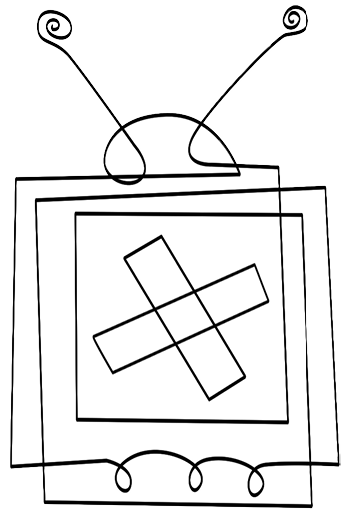
RUH KONUŞMASI
Anne ve babaların kafasının hayli karışık olduğu bir zamanda yaşıyoruz. Etrafta çok fazla uğultu var. Sokak, Tanpınar’ın benzetmesiyle bir ‘uğultu değirmeni’dir artık ve Ahmet Haşim’in ‘yorgun başın munis bir ilticagâh’ı olarak nitelediği sinemanın yerini ekran almıştır.
Yorulan başımızı artık ekranın söylediği ninnilerle dinlendiriyoruz. Bu arada, medya çağında nasıl bir anne babalığın doğru olduğunu da şaşırmış durumdayız, endüstri destekli kültür, bizi ‘çölde kaybolmuş kimseler’ gibi yönsüz ve yurtsuz bırakmış durumda.
Endüstri kaynaklı kültür, tüketimi arttırmak ve bize bazı şeyleri ihtiyaç olarak hissettirmek için medya üzerinden inanç ve istekleri yönlendiriyor. Bunu popüler kültürü çoğaltarak, yeniden üreterek ve yaygınlaştırarak yapıyor. Medya yöneticileri için hava hoş, “Düğmeyi kapatın ve çocuklarınızı sunduğumuz zararlı etkilerden koruyun” diyorlar. Oysa ekran bize sadece evimizden değil, sokaktan, işyerinden, okuldan ve soluduğumuz havadan da nüfuz ediyor. Kültürel etkiler, gözle görülmeseler de yaygın ve güçlü.
Endüstri kaynaklı kültür, çocukları giderek daha erken yaşlarda, ailelerinin izni olmadan karar vermeye zorluyor. Zamanından önce cinsel kimlik rollerine bürünen, tüketici kimliğini çok erken yaşlardan itibaren edinen, çabuk büyümüş kuşaklar geliyor. Ebeveyn otoritesi de zayıflıyor ve çocukların gözünde aptal görülen ve haksızlıkla suçlanan ebeveynler, onlara söz geçiremiyor.
Yorulan başımızı artık ekranın söylediği ninnilerle dinlendiriyoruz. Bu arada, medya çağında nasıl bir anne babalığın doğru olduğunu da şaşırmış durumdayız, endüstri destekli kültür, bizi ‘çölde kaybolmuş kimseler’ gibi yönsüz ve yurtsuz bırakmış durumda.
Soru şu: Otorite ve sorumluluğu zayıflatan endüstri kaynaklı kültür içinde çocuklarımızın sağlıklı bir özerklik kazanarak büyümelerini nasıl sağlayabiliriz? Endüstri kaynaklı kültür, kitlelerin dikkatini sansasyonel ve içeriksiz yönlere çekerek analiz ve düşünce süreçlerini bastırıyor. Çizgi filmler ve video oyunları yüksek oranda şiddet içeriyor ve bu bize çocuklarda artan agresif davranışlar ve şiddet olarak geri dönüyor. Medyada ‘anormal’ içerik arttıkça, sosyal ‘kabul görme’ de artıyor. Gerçek dünya, ekran gibi görülüyor ve bununla birlikte insan davranışları ve sosyal normlar değişiyor. Görsel medyada sürekli olarak hazır sunulan ve hızlı değişen imgeler; düşünme yeteneğinde azalma, kısalmış dikkat süresi, hiperaktivite ve dürtüsellik gibi sorunlara yol açıyor. Ayrıca çocukların hayal gücü zayıflıyor ve medyanın kendilerine sunduğu imajlarla sınırlı kalıyor.
Endüstri kaynaklı kültürde dünya adeta bir makine, bireyler de nesne hüviyetinde. Yalancı ihtiyaç ve bağımlılıklar var. Gerçeğe uymayan çabuk sorun çözme yöntemleri emrimize amade artık, sit-com dizilerde sorunlara şipşak çözümler bulunuveriyor. Oysa gerçek hayatta belirsizlik mevcut ve sonuçlar hiçbir zaman garantili değil. Çünkü insanca ihtiyaçlar var; ve insanlar nesne değil, duyguları ve düşünceleri olan sahici varlıklar.
Medyada ‘anormal’ içerik arttıkça, sosyal ‘kabul görme’ de artıyor. Gerçek dünya, ekran gibi görülüyor ve bununla birlikte insan davranışları ve sosyal normlar değişiyor.
Dış dünyayı hayatımızdaki en etkin kuvvet olarak algılarız. Endüstri kaynaklı kültür, var olmak için ‘materyal’ üzerinde durarak, dış dünyaya odaklanmaktadır. Çocuklarımızı karakter sahibi, dürüst, empatik, cömert bireyler olarak yetiştirmek istiyorsak, onlara iç dünyalarına yönlendirecek ortamlar yaratmalıyız. İç dünya deyip geçmeyin: Kendimizle tanıştığımız, amaç kazandığımız, özbenliğimizi inşa edip benzersiz bireyler olduğumuzu, kendimizi ve dolayısıyla başkalarını takdir eden kişiler olduğumuzu fark ettiğimiz bir yer, bir uzaydır iç dünya. Unutmayalım ki anne veya baba olmak; aklı ve kalbi, sevgiyi ve zekâyı, iletişim ve sessizliği birleştirebilmeyi gerektiren bir sanattır.
Geçen yüzyılın başında, ülkenin kimi bölgelerinde, Rus babalar çocuklarıyla ‘ruh konuşması’ yaparlarmış. Saatler süren bu konuşma çocuğu olgunlaştıran, yetişkinliğe hazırlayan, ona birey olarak değer veren bir anlayışı işaret ediyor. Bir babanın zamanımızda çocuğuyla günde ortalama on dakika konuştuğunu hatırda tutarsak, çocukların uğradığı mahrumiyeti anlayabiliriz. Yetişkinlerle yapılmış iyi bir konuşma çocuğun beynini uyarır, zaten akışkan ve dinamik bir yapı olan beyin böyle bir konuşmayla değişir, sinir hücreleri yeni dallanmalarla genişler. Ergenlikten sonra beyin pek az büyüyebilir, o yüzden iyi ve güzel bir konuşma çocuk beyninin besinidir.
Yetişkinlerle yapılmış iyi bir konuşma çocuğun beynini uyarır, zaten akışkan ve dinamik bir yapı olan beyin böyle bir konuşmayla değişir, sinir hücreleri yeni dallanmalarla genişler. İyi ve güzel bir konuşma çocuk beyninin besinidir.
Yeni sözcükler beyni açık bir biçimde uyarırsa da günümüzde televizyonda kullanılan kelime dağarı giderek daralmaktadır. Televizyon dili öyle ayarlanmaktadır ki onu izleyen insanlar kendilerini aptal hissetmesin ve program içinde gösterilen reklamlara kendilerini kapatmasınlar. Edilgen TV izleyiciliği ile beyni dumura uğrayan çocuk umudunu yitirir, zira dış senaryonun yerine geçecek bir iç senaryo tahayyül edemez. Dış senaryo kirli, vahşi, çirkin ve çürüyen bir dünyanın resmini çizmektedir ve yeni bir senaryo hayal edemeyen çocuk, çevre tarafından kurbanlaştırıldığını düşünür.
Okullar artık televizyon tarafından özürlü hale getirilmiş çocuklarla dolu. Öğrenme güçlüğü veya dikkat eksikliği gibi sorunlar günümüzde çok daha fazla teşhis ediliyor. Çocukları okullarda tutmak eskisinden daha zor. Beyin, televizyonun zehirli etkisiyle hıza alıştırılıyor. İmgelerin hızla değiştiği, şeylerin patladığı, şiddetin sıradanlaştığı, dilin giderek daraldığı bir medya ortamı içinde çocuklar; ders çalışmak, kitap okumak veya düşünmek gibi yavaşlık ve dikkat gerektiren eylemleri yapamaz hale geliyorlar.
“Görme zafer kazanır; çünkü faydalıdır” diye yazmıştı Jacques Ellul olağanüstü güzellikteki kitabı Sözün Düşüşü’nde. “Görme bizi düşünme ve hatırlama derdinden kurtarır.” Hız unutturur. İmge bombardımanı bizi hatırlamak derdinden kurtarır. Ekran bizi seyirci kılar, seyirci eylemin peşinde koşan kişi değildir, ‘seyirciye dönüşen varlığımız herhangi bir eylemde bulunma imkânımızı felce uğratır’.
Televizyonun başını çektiği bir bayağılaştırma rüzgârı, önüne kattığı her şeyi basitleştirip satılabilir hale dönüştürerek sürüklüyor. Güldüren, ağlatan, tiksindiren, öfkelendiren, iç gıcıklayan her yapım özde ne sunduğuna bakılmaksızın izlenme cetvellerinde yerini alıyor. Televizyonla evlerimize bir ergen ruh halinin tohumları ekiliyor: Her an göbek atmaya hazır, dürtülerini salıvermeye meyilli, bendini aşıp taşmaya dünden razı bir toplumuz artık. Ergenliğin o uçarı neşesine ve denetimsizliğine kapılmış, yetişkinliğin yani hazzı geciktirebilmenin olgunluğunu yitirmiş bir ‘yırtık’ insanlar topluluğuyuz.
Erişkinler ergen gibi davranıyor ve ergenler büyümeyi reddediyor. Pek az insan ciddi konulara ilgi duyuyor. Çalışmak yerine kısa yoldan şöhret olmak yeğ tutuluyor. Düş ve uyanıklık arasındaki çizgi muğlâklaşıyor. Ekranın görmediği ve göstermediği bir hayatı yaşanmamış saymaya başlıyoruz. Bayağılaşma, hazzı hemen tatmin edilmesi gereken bir şey olarak tanımlıyor, dürtüler üzerindeki denetime savaş açıyor. Yaşamanın getireceği bilgelik lügatlerden siliniyor. Hızlı, sığ ve anlık yaşamak günün düsturu oluyor. Böyle bir hayat ‘lifestyle’ yazarları ile propaganda ediliyor. Adanmak yok, ülkü yok, derinlik yok. İmgenin saltanatı. Sözün düşüşü.
Edilgen TV izleyiciliği ile beyni dumura uğrayan çocuk umudunu yitirir, zira dış senaryonun yerine geçecek bir iç senaryo tahayyül edemez. Dış senaryo kirli, vahşi, çirkin ve çürüyen bir dünyanın resmini çizmektedir ve yeni bir senaryo hayal edemeyen çocuk, çevre tarafından kurbanlaştırıldığını düşünür.
Kıssadan hisse: Çocuklarınızı bir ruh konuşmasına çağırın. Onların sinir hücrelerini yeni sözcüklerle şaşırtın, beyinlerinde yeni kıvılcımlar çaktırın, zihinsel özürlü olmalarına izin vermeyin. Ruhların iğdiş edilmesine karşı durun. Televizyonunuzu kapatmayı unutmayın.

BENLİĞİN ve TOPLUMUN KRİZİ
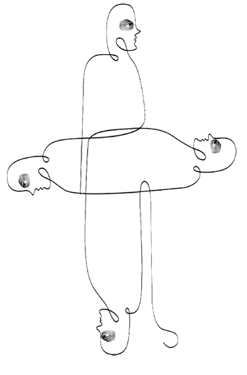
BEN TARİKATI
Günümüz Türkiyesi’nde gazetecilerden oyunculara, politikacılardan işadamlarına kadar pek çok insan ‘ben tarikatı’nın müridi. Bu insanlar, kendilerine tapınmayı var olma sebebi haline getirmiş durumdalar. Onlara kalırsa hayatın asıl amacı, ne pahasına olursa olsun, başarmaktır. Başarabilenler, hak ettikleri için başarmıştır. Başaramayanlar ise zaten yeteneksiz ve hak etmemiş insanlardır.
‘Ben tarikatı’nın müridanı, kendilerini her dem yeniden pazarlama hevesindedir. Gazetelerin magazin sayfaları, bu itibarsız şöhretlerin şişmiş egolarıyla doldurulur.
Modern dünyada başarının her şeyi meşrulaştıran bir işlevi var. Kişi eğer başarı merdivenlerini tırmanmışsa, oraya hangi yöntemleri kullanarak ulaştığı sorgulanmıyor. Başarının, bireye kendisini diğer insanlardan üstün görme hakkını verdiği kabul ediliyor. Benlikleri kutsamanın en önemli vasıtalarından birisi başarı. Ama neyi başarmak? İyi bir bilim adamı olmanın, hayırseverliğin veya dürüst bir yurttaş olarak kalmanın günümüz toplumunda şöhret, para ve iktidara tahvil edilebilir bir tarafı yok. Başarı, günümüz Türkiyesi’nde şöhret, para ve iktidarın kapılarını açabildiği sürece anlamlı.
Günümüz Türkiyesi’nde gazetecilerden oyunculara, politikacılardan işadamlarına kadar pek çok insan ‘ben tarikatı’nın müridi. Bu insanlar, kendilerine tapınmayı var olma sebebi haline getirmiş durumdalar.
Başarının güncel tanımlanma biçimiyle ilgili şöyle bir sorun var: İnsanlar topluma, kültüre, insanlığa sunabildikleriyle değil, kendilerine sunabildikleriyle başarılı sayılıyor. O yüzden ünlü ekran yüzlerini, cemiyet sayfası gediklilerini bir sosyal sorunun çözümünde öncülük ederken göremiyoruz. Kendilerine para ve itibar olarak geri dönmeyecek şeyler için neden değerli vakitlerini heba etsinler, değil mi? Günümüzde benliğin kendisi, tek başına bir değer sağlayıcı haline geldi: “Benim için iyi olan, iyidir.” Bir dünya görüşüne, bir dine, bir anlam çerçevesine atıf yapmamıza gerek yok. Kişisel çıkarlarımıza hizmet ediyorsa, ahlakın genel kurallarından bağımsız olarak, o şey iyi sayılıyor. Benliğin üstünde bir ahlakî otorite yoksa, bireyin teslim olacağı bir ahlak kodu yürürlükte değilse, o zaman kişinin toplumsal faydayı değil de kişisel faydayı yeğlemesi meşruiyet kazanıyor. Doğru ve yanlış, iyi ve kötü hakkında nesnel ölçütler ortaya konulamıyorsa, o zaman herkes kendi benliğini kendisine rehber edinecektir. Ahlak artık kişisel bir sorun ve bireysel bir karardır.
Kişisel gelişimin ayrıcalıklı statü kazandığı bir çağda; değişmek, sabit kalmak neredeyse bir başarısızlık alameti sayılıyor. Duygusal ilişkiler kısa ömürlü, hesapçı ve benmerkezci olduğunda, kimse kendisinden başkasına duygusal yatırım yapmıyor. Aşk artık insanlardan fedakârlık, bağlanma veya sadakat gibi duygular talep etmiyor. Aşk artık benimle ilgili. Kendimi bulmam, kendimi gerçekleştirmem, özerklik kazanmam ve kişisel olarak gelişmem için bana lazım olan bir şey. Benliğe bu denli çok eğilmek, onu bunca ölçüsüz kutsamak samimi ilişkilerin altını oyuyor. Yakın ilişkiler endişe yüklü. Her ilişki, bir duygusal ıstırap riskini içinde taşıyor. “Dikkat et! İncinebilirsin” diyor kişi kendisine; her ilişki, muhtemel bir infilak.
Benlikleri kutsamanın en önemli vasıtalarından birisi başarı. Ama neyi başarmak? İyi bir bilim adamı olmanın, hayırseverliğin veya dürüst bir yurttaş olarak kalmanın günümüz toplumunda şöhret, para ve iktidara tahvil edilebilir bir tarafı yok.
İnsanın ‘kendisini tavaf eden hacı’ olduğu bir zamanda, ilişkiler de kısa ömürlü ve yüzeysel. Coğrafî hareketlilik mekâna sadakati ortadan kaldırıyor. İnsan ilişkilerinde diğerkâmlık ve sadakat mumla aranıyor. Güven aşınıyor. Sadece kendi benliklerini referans alan insanlar, bir diğerine şüpheyle bakıyor. “Beni kullanmak istiyor olmasın? Beni sömürerek kendisine menfaat sağlayacak olmasın?” tarzı şüpheler, dostluk ve dayanışmanın altını oyuyor. Hiçbirimiz karşımızdaki insanın aklını okuyamayız. Ama toplumsal hayat asgarî bir güven duygusuna ihtiyaç duyar, diğer insanların iddia ettikleri ve göründükleri kişi olduklarına inanmamızı gerektirir. Sağlıklı bireyler olmak için başkalarına ve dünyaya karşı temel bir güven duygusu geliştirebilmemiz icap eder. Maalesef günümüzün ruh iklimi fazlasıyla karamsar, duygusuz ve şüpheci. Hayatın sunduğu yegâne armağanın ‘dünyevî zevkler’ olduğunu düşünen ‘ben tarikatı’ üyeleri, yabancılaşmanın öncü kuvveti olarak ‘anlam krizi’ni tırmandırıyor.
Peki, insanlar neden durduk yerde kendi benliklerini ululuyor, neden sürekli kendilerine atıfla konuşuyorlar? Böylece aidiyet, gaye ve emniyet sunmayan bir çağda, bu duyguları sağlamak istiyorlar. Piyasa kapitalizmi, sadece politika ve kültürü değil insanların duygusal hayatlarını da dönüştürüp bozuyor. Türkiye bir değersizlik buhranı yaşıyor. Geçmişin değerlerine hayat hakkı tanınmıyor ama toplumsal hayata rehberlik edecek yeni bir değerler silsilesi de oluşmuyor. Böylece toplumsal hayatın ‘mankurt’laşmış seçkinleri, tıpkı aynı değersizlik cenderesinde öğütülmüş lümpen sınıflar gibi, içinde yaşadıkları evreni sadece kendilerine sunduklarıyla ölçüyor, her şeyi kendi benliklerine sağladığı yararla tartıyorlar.
Doğru ve yanlış, iyi ve kötü hakkında nesnel ölçütler ortaya konulamıyorsa, o zaman herkes kendi benliğini kendisine rehber edinecektir. Ahlak artık kişisel bir sorun ve bireysel bir karardır.
Altmışlı yılların dünyayı değiştirebileceğine inanan iyimser insanlarının yerini, iki binli yıllarda şüpheci, ümitsiz, bitkin ve karamsar bir kuşak almış durumda. Kendi hayatını efsaneleştirerek, kendi benliğine tapınarak anlam buhranına çare arayan bir kuşak karşısındayız. Hayat ‘ben’le başlıyor ve ‘ben’le nihayet buluyor. Güven, inanç ve imanın bittiği bir noktada ‘dava delisi’ insanlar kayıplara karışıyor ve insanlar bir üst kimlik olarak ‘ben tarikatı’nda buluşuyor. Geçmişin kesin inançlıları, bugün para, şöhret ve iktidar olarak geriye dönecek bir başarının izini sürüyor.
Maalesef günümüzün ruh iklimi fazlasıyla karamsar, duygusuz ve şüpheci. Hayatın sunduğu yegâne armağanın ‘dünyevî zevkler’ olduğunu düşünen ‘ben tarikatı’ üyeleri, yabancılaşmanın öncü kuvveti olarak ‘anlam krizi’ni tırmandırıyor.
Katı olan her şey buharlaşıyor.

ÂLEMLERE AKMAK
Bu hayatta hepimiz kendimizi sevmek isteriz. İnsan değer verilmek ve sevilmek ister, bu arzu ve arayış bir ömür boyu sürer. Ne zaman iyi bir şey yaptığımızı düşünsek hemen dönüp etrafta bizi takdirle süzen gözler veya bir alkış sesi ararız. Yazdığım bir yazı, bir başkasının kalbine değebilirse, yeryüzündeki varlığımı daha anlamlı bulurum.
Kendimize duyduğumuz sevgi bazen marazi hallere bürünebilir ve çevremizdeki insanları canından bezdirebilir. Ancak narsisizmimizi genellikle daha işe yarar durumlara dönüştürürüz. İnsanın kendi özseverliğini dönüştürme biçimlerinin başında iş gelir: İş, üretken kişi için adeta bir geçiş nesnesidir. Yani annenin huzur dolu varlığından gerçek dünyanın tekinsizliğine geçişte sarıldığımız nesneler gibi, bir battaniye, bir oyuncak, annenin verdiği emniyeti simgeleyen herhangi bir şey gibi. İşlerimiz sayesinde kendimizi önemli hissederiz. Kendimize daha fazla önem verme ihtiyacı duyduğumuzda işlerimizi abartırız.
İnsan bir ada değil, kaldı ki bir adayı bile sevgiyle kucaklayan bir deniz var çevresinde; otu var, ağacı var, börtü böceği var. İnsan ilişki içinde bir varlık ve ancak ilişkiyle, başkası tarafından işitilmek ve anlaşılmak suretiyle varlığını ve hayatiyetini sürdürüyor. Kimileri, kadim kelamı değiştirerek, “Öce ilişki vardı” derler. Özsevimizi dönüştürme biçimlerimizden birisi de empati duygusu veya hemhâl oluş. Kendimizi bir başkasının yerine koyarak onun ne düşündüğünü ve hissettiğini anlamak. Doğumdan itibaren bebekler anneleriyle duygusal bir ayar tutturmaya hazırdır. Bu karşılıklı etkileşim, empati duygusunun tohumlarını atar. Batı kültürünün eğitim süreçlerinin, hemhâl oluşun yerine bilmenin empatik olmayan biçimlerini koyduğu ve bunun da nesnel, mekanik ve maddeci bir dünya görüşünü çoğalttığı dile getirilmiştir.
İnsanın kendi özseverliğini dönüştürme biçimlerinin başında iş gelir. İşlerimiz sayesinde kendimizi önemli hissederiz. Kendimize daha fazla önem verme ihtiyacı duyduğumuzda, işlerimizi abartırız.
İnsanın kendine duyduğu sevda, geçiciliği yani sonluluk ve ölümü kabul ederek de dönüştürülebilir. Ölümün kabulüyle, dirimin daha zengin bir duygu ve deneyimine ulaşırız. Ölümle yüzleşebilenler, hayatlarına derinlik ve anlam katabilen insanlardır. Ölüme verilecek bir cevabımız varsa, dünyanın bize geçici bir yurt olabileceğine dair ümidimiz var demektir. Ölüm varlığı ışıtır. Onun sayesinde yaşamanın bir lezzeti, sevmenin bir izzeti olur. Ebediyetin ışıkları içeri sızdığı için, aşk vardır. Aşkın ışıkları içeri sızdığı için dünya insana bir ev olur. Ev, mânânın olduğu yerdir. Varlığın evi, aşk ve anlamla çatılır.
Kendi kendimize duyduğumuz sevdayı, özsevimizi veya narsisizmimizi, kendimizle dalga geçerek de dönüştürürüz. Hayatı bir şaka gibi yaşayan insanlar, bu mânâda ‘aşmış’ insanlardır. Buraya bir parça bilgelik tozu da serpiştirmek icap eder: Kim ki entelektüel, fiziksel veya duygusal güçlerinin bir sınırı olduğunu bilir ve bu sınırları gönülden kabullenirse, o bilgeliğe doğru bir adım atmış demektir. Hayatın büyük resmini dikkate alarak, bir denge ve oran tutturmak demektir bu. Aktığın ırmağın varacağı menzili özlemek. O ırmakla birlikte çağlamak, o çağıltıyla coşkuya kapılmak. Akışı hissederek akmak.
İnsanın kendine duyduğu sevda, geçiciliği yani sonluluk ve ölümü kabul ederek de dönüştürülebilir. Ölümün kabulüyle, dirimin daha zengin bir duygu ve deneyimine ulaşırız. Ölümle yüzleşebilenler, hayatlarına derinlik ve anlam katabilen insanlardır.
Anlayacağınız, adam olmanın sayısız yolu vardır. Kendi etrafımıza ördüğümüz kozalardan, o küçük dünyalarımızın içinden çıkıp büyük resme bakabilirsek, adam olmak ihtiyacını ruhumuzda en yakıcı biçimiyle hissedeceğiz. Çabasız tatmin insanı sükûna erdirmez, sadece yabancılaşma, sıkıntı ve değersizlik duyguları yaratır. Kimi insanlar vardır hayatları boyunca parayı koklar, o kokuyu aldıkları yöne seğirtirler. Kimileri iktidara açtır, oturdukları koltukla yüceldiklerini sanırlar. Herkes kendi güvensizliğini iyileştirme telaşındadır.
Oysa güzelliği, iyiliği ve hakikati aramayan bir ömür, sonunda insana beyhude bir debelenme hissinden başka ne verebilir? Herkesi aynı kaderin beklediği, hayatların farklı farklı ancak kaderin ortak olduğu bir dünyada, kimin kazanıp kimin kaybettiğini nereden bileceğiz? Ne banka hesabımız ne de oturduğumuz koltuklar ölüme karşı bir panzehir sunuyor. Kader ortak.
Bizim Hüseyin, “Kemal Hoca” diyor, “bu hafta da âlemlere akamadık!” Ne zaman uğrasa, o hafta akış olup olmadığını soruyorum ona. “Bir âlem bul da ak” sevgili kardeşim. Daha iyisi, “Bir âlem ol da ak!”
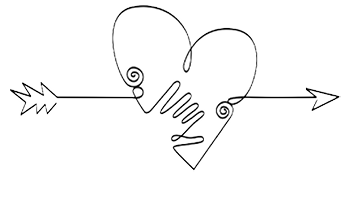
MERHAMET YORGUNLUĞU
Modern kültür üzerine yazan kimi yazarlar, modernleşmeyle birlikte, ahlakın tartışıldığı ortak mekânların kaybolduğunu dile getiriyor. Ahlak kamusal alanda tartışılmadığında, karikatürleştirilerek medyanın sansasyonel haberciliğine meze yapılıyor. Ahlaksızlığı gözümüzün içine sokan gazete ve televizyonların, yeri geldiğinde nasıl ahlakçı kesildiklerini biliyoruz. Ahlaki söylem giderek zayıflıyor, zira modern dünyada sırtını yaslayacağı tutarlı bir dinî inanış ve gelenekler dizisi yok. “Ne yapmalı?” sorusu her zamankinden daha önemli görünüyor. Çürüyen ve kokuşan bir dünyada ahlakı savunmak için ne yapmalı?
Başka birisine acı verebileceğimin bilinci beni ahlaklı davranmaya iter. Ahlakın ötekinin yüzünde başladığına inanan bir kişi, sırada bekleyen insanların önüne geçemez.
Bunun için öncelikle, “Hangi hikâyenin bir parçasıyım?” sorusuna bir cevap vermemiz gerekiyor. İçinde yaşadığımız toplumun hikâyeleri biz doğmadan önce de vardı. Kendimizi bu hikâyelere katacak mıyız, bireysel yaşantımız ile kendimizi bir parçası saydığımız hikâyeyi uzlaştırabilecek miyiz? Yoksa tarihe ve topluma sırtımızı dönüp CNN ve benzeri merkezlerin ürettiği hikâyelerle mi tatmin bulacağız? Sözcüklerin değil imgelerin anlattığı, katılıp zenginleştiremediğimiz, bir elden üretilip dünyaya sunulan öyküler mi bizi tarif edecek? Türkiye’nin çalışan şehirli kadınları Ally McBeal’le mi özdeşleşecek? Bedeni bir ahlak alanı olarak tartışmayı, Ahlaksız Teklif filmini uyarlayan bir diziyle mi yapacağız?
Modern kültür üzerine yazan kimi yazarlar, modernleşmeyle birlikte, ahlakın tartışıldığı ortak mekânların kaybolduğunu dile getiriyor. Ahlak kamusal alanda tartışılmadığında, karikatürleştirilerek medyanın sansasyonel haberciliğine meze yapılıyor. “Ne yapmalı?” sorusu her zamankinden daha önemli görünüyor.
Ahlak bugün Türkiye’nin en büyük meselesi. Acar müteahhitlerin, ulaştıkları her yerde kamu görevlilerini satın alarak kendilerine haksız bir ikbal kapısı araladığını gazetelerde okuduk. Kamu personelinin bir kısmının rüşvet almasının vakayı adiyeden sayıldığı bir ülkede, hâlâ bazı hayalî korkular üretenler varsa, onlar ipteki cambazı gösteren yankesicilerin suç ortağıdır. Üniversitede ahlaksızlık vardır zira bilimsel açıdan kısır kişiler ideolojik yaltaklanmalarla akademik merdiveni tırmanabilir. Siyaset ve ticaret, öteden beri bu ülkede ahlakın mumla arandığı yerler olagelmiştir. Bürokrasi, hizmet etmesi gereken toplumu değil, sadece zümrevî çıkarları gözeterek ahlaksızlığa davetiye çıkarır. İnsan ilişkilerinde güçlünün zayıfı ezdiği, paranın kirli ellerde çoğaldığı, ekranların laubalilikle insanları tedhiş ettiği bir ülkede, ahlak birinci meseledir. Çünkü ahlaki yaşantı, insanlığımızı tanımlayan ve dünyamızı gerçek kılan her şeydir.
Ahlak, dünyamızı gerçek kılar çünkü sadece gerçek dünyada acı vardır. Gerçek dünyadaki haksızlık can yakar. Başka birisine acı verebileceğimin bilinci beni ahlaklı davranmaya iter. “Ormanları yok edersem bu ülkenin gelecek kuşaklarına acı vermiş olacağım” diyebilen insanlar ağaç katliamı yapamaz. Kendisini bu toprakların hikâyeleriyle emziren bir insan, Üsküdar meydanındaki o güzelim çeşmeye en vandal harflerle bir futbol takımının ismini yazamaz. Ahlakın ötekinin yüzünde başladığına inanan bir kişi, sırada bekleyen insanların önüne geçemez.
İçinde yaşadığımız toplumun hikâyeleri biz doğmadan önce de vardı. Kendimizi bu hikâyelere katacak mıyız, yoksa tarihe ve topluma sırtımızı dönüp CNN ve benzeri merkezlerin ürettiği hikâyelerle mi tatmin bulacağız?
Türkiye’den yakınmak yapılacakların en kolayı. Oysa hepimiz bir kenarından bu günah çemberine tutunmuş durumdayız. Koca bir ülke, adeta herkes birbirinin suçunu bildiği için kimsenin konuşmadığı bir suç şebekesi. Hepimiz bir merhamet yorgunluğundan mustaribiz. Toprağa ve insana merhamet etmeyi unutmuşuz. Küçücük yavruların psikopatik şiddetin yeni kurbanları olarak zuhur etmesi bu yüzden. Toprağı her zamankinden fazla kirlenmesi, insan ilişkilerindeki şüphe, ideolojik bezirgânlık bu yüzden. “Etik epistemolojiden önce gelir” demişti Emmanuel Levinas, “ötekinin tanınması ve geçerli kılınması, sorgu sual edilmesinden önce gelir.” “Gelin tanış olalım” demişti koca Yunus. Muhabbet ve merhamet yoksa, ahlak yoktur.
İnsana sadakat, toprağa sadakat, gerçeğe sadakat. Ticari ve politik propagandanın her şeyi kirlettiği bir çağda, sahih ve halis olana sadakat. İnsanlığın kadim hikâyelerine sadakat.
Yitirdiğimiz ahlakı bulmak için, daha iyi bir kılavuz var mı?
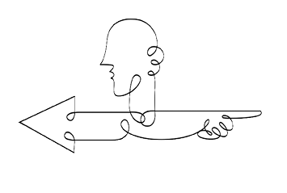
TARAF TUTMAK
İnsan ruhunun kasvetli bir koridora açılan pencereleri olduğu gibi, şefkat ve merhametin ışıklı koridorlarına açılan pencereleri de vardır. Basında yer alan haberler, insan doğasının karanlık tarafını temsil eden zalimlik, cinayet, hırsızlık, savaş gibi kötücül eylemleri daha fazla bildirir. Aslında insanların özünde, saldırganca duygulardan belki daha fazla olarak, fedakârlık ve diğerkâmlık yeteneği mevcuttur. Bunun için anlayış ve empatiye hayatlarımızda daha fazla yer ayırmamız gerekiyor.
Empati başka insanların acılarını, ıstırap ve sıkıntılarını anlayabilmek, hissedebilmek ve onları anlayıp hissettiğimizi onlara da duyurabilmek demek. “Başkasının acısı benim acımdır” diyebilen insanlar daha yardımsever ve diğerkâm olurlar. Ahlakın kökleri de empati duygusunda yatar; acı, tehlike ve yoksunluğun yarattığı muhtemel kurbanlara eşduyum gösterebilen insanlar, acıyı sadece kendi bölgelerinden değil insanlığın yanından yöresinden kovmak isterler.
Aliya İzzetbegoviç, Tarihe Tanıklığım adlı kitabında şöyle yazar: “Kurbana duyulan sempati, düşünme yetisinde bulunabilecek bir şey değildir; o ancak ruhta, yani ‘bu dünyaya ait olmayan’ bir ilkede bulunabilir... Ne denli yoğun olursa olsun hiçbir akıl yürütme, düşünme ve basiret, adalet ve hakikat uğruna feda edilmiş bir hayata ilişkin tek bir örneği bile açıklamaya, meşrulaştırmaya yetmez.” Bu sözler uzun zamandır zihnimi tırmalıyor. Hodbinliğin salgın boyutuna vardığı bir zamanda, başka insanların yararı için kendi çıkarlarını feda eden, doğruluk ve hakikat için, özgürlüğün ve adaletin türkülerini söyleyebilmek için kendilerini feda eden insanları nasıl açıklayacağız? Onları esinleyen şey nedir? Hangi psikolojik dürtü veya düzenek ‘bu çağın soyluları’nı diğerlerinden ayırıyor?
Yakın zamanlı bazı çalışmalar başka insanların iyiliğini düşünmenin insan doğasında var olduğunu gösteriyor. Diğerkâmlık, sıradan insanlığımızla onu aşan ‘meleksi’ tarafımızın arasında bir yerde, maneviyat ile bilimin birbiriyle kapıştığı bir alanda duruyor.
İnsan doğasına ilişkin karamsar görüşü inatla koruyanlar, diğerkâm kişinin evrendeki temel dürtü olan organizmanın kendi öz çıkarlarını kovalama ilkesine aykırı hareket etmediğini, cömert bir edim gibi görünen şeyin aslında size başkalarının yardım etmesini sağlamaya dönük bir hareket olduğunu dile getirirler. Şüpheciler der ki, başkalarına yardım ederiz çünkü etmezsek hissedeceğimiz utanç ve suçluluğu bu eylemle gidermek isteriz veya kendi kendimize daha fazla saygı duymak için, insanlar tarafından hayırsever ve iyi birisi olarak tanınmak için yardım ederiz.
Oysa kimsenin görmediği, göremeyeceği, görülse, övülmek bir kenara sert bir biçimde cezalandırılacak yardımlar vardır. İnsanlık bu kabil kahramanlık edimlerine savaş ve buhran zamanlarında tanıklık eder. Nazi soykırımından Yahudileri kurtaran insanlar üzerinde yapılan ruhbilimsel bir çalışma, kurtarıcıları fevkalade empatik kişiler olarak tanımlıyor. Bu insanlar başka varlıkların acı çektiğini görmek istemiyor ve hemen o acıyı dindirecek bir şeyler yapmaya soyunuyorlar. Başkasının çaresizlik ve keder içinde oluşu onlarda empati uyandırıyor, ‘başkalarının kederli olduğu bir dünyada ben mutlu olamam’ düşüncesi onları eyleme geçiriyor.
İnsan ruhunun kasvetli bir koridora açılan pencereleri olduğu gibi, şefkat ve merhametin ışıklı koridorlarına açılan pencereleri de vardır. Aslında insanların özünde, saldırganca duygulardan belki daha fazla olarak, fedakârlık ve diğerkâmlık yeteneği mevcuttur.
Yakın zamanlı bazı çalışmalar başka insanların iyiliğini düşünmenin insan doğasında var olduğunu bize gösteriyor. Diğerkâmlık, sıradan insanlığımızla onu aşan ‘meleksi’ tarafımızın arasında bir yerde, maneviyat ile bilimin birbiriyle kapıştığı bir alanda duruyor. Manevî disiplinler insanın ahlaken evrilebilir, mükemmele doğru gidebilir bir varlık olduğunu söylerken; bilim, insana diğer varlıkların arasında daha kutsal, daha özgül bir rol biçmiyor.
Çağımız narsisizm ile diğerkâmlığın savaşına tanıklık ediyor. Narsisistik düşünce içindeki grup ve kişiler, kendi gruplarının seçilmişliğine, üstünlüğüne ve dışarıda kalanların potansiyel düşmanlar olduğuna inanırken; diğerkâm oluşumlar, bütün insanların eşit ve değerli olduğuna inanıyor ve dışarıda kalanları potansiyel dost olarak algılıyor. Narsisist, ‘grubumuzun hak ve iddiaları öncelik taşır, grubumuzun dışında kalanların hayatları kolayca harcanabilir, ancak kendi grubumdaki insanlara yardım edersem daha iyi biri olurum’ derken, diğerkâm, ‘hiçbir grubun öncelikli bir iddiasının olamayacağını, bütün hayatların kutsal olduğunu ve grubun dışında kalanlara yardım etmenin kendisini daha iyi bir insan yapacağını’ düşünüyor. Şimdi siz kendinize sorun. Hangi taraftasınız?
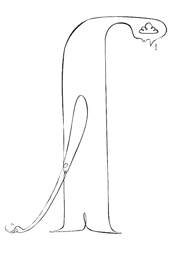
MAHREMİYETİN YİTİMİ
“Aşk” demişti Hannah Arendt, “ortalıkta gösterildiği an, solmaya ve ölmeye yüz tutar.” Özel alan ve kamusal alan arasındaki sınırın muğlâklaştığı bir zamanda yaşıyoruz. Geçmişte özel alan, kişiye sadece düşünüp bir başına kalacağı bir alan değil aynı zamanda kişiliğini geliştireceği bir ortam sunuyordu. Yakın ilişkilerin mahremiyete ihtiyacı vardır. Kişinin ruh arkadaşına ifade ettiği his, tutku ve düşünceler toplum önünde söylendiğinde anlamını kaybeder ve başka bir şey olur.
Günümüzün ‘aç kendini!’ toplumunda, yaralarımızı göstermemiz, o yaraları da bir ‘başarı öyküsü’ne dönüştürmemiz bekleniyor. Gönül burukluğunu dahi pazarlayabilen bir iktisat karşısındayız.
Kamuoyu ilgisi, tırmandırılan magazin kültürüyle, önemli konulardan suya sabuna dokunmaz meselelere doğru kaydırılıyor. Tanınmış kişilerin özel hayatları inceleme konusu yapılıyor, özel ilişki ve itirafların toplum önünde de sergilenmesi bekleniyor. Magazinleşmeyen konular, ‘anlaşılmaz’ hanesine yazılıp bir kenara terk ediliyor. Televizyon ortamı, o yüzden sıklıkla kişisel ve mahrem dertler üzerine odaklanarak, bize toplumsal kötülüğü unutturmak derdinde. İnsanlar, mahrem hayatlarını milyonlara açarak paylaşmaya teşvik ediliyor ve bunu yapınca da bir aferin alıyorlar. “Yeterince cesurdun, aferin!”
Yakın ilişkilerin mahremiyete ihtiyacı vardır. Kişinin ruh arkadaşına ifade ettiği his, tutku ve düşünceler toplum önünde söylendiğinde anlamını kaybeder ve başka bir şey olur.
Aslında şöhrete söylenen şudur: “Evet bizden daha güzel ve başarılısın ama bunun bir bedeli olmalı. Bak aile hayatın berbat, senin mutlaka depresyonda olman ve ağlaman gerekiyor. Ağla ve ne kadar mutsuz olduğunu itiraf ederek bizi rahatlat.” Burada gerçek mesele, bir insanın iç dünyasının milyonlar önünde bu kadar ulu orta tartışılabilmesidir.
İtiraf televizyonları veya başka bir isimle çöplük televizyonları, mahrem yaralarınızı başkalarıyla paylaşmak suretiyle size rahatlama ve iyileşme vaat eder. Paylaşmak demek, kimi özel dertleri halk hikâyelerine çevirmek demektir ve günümüzde sessizlik hor görülür. Konuşan insanın sağlıklı olduğu önermesi alttan alta desteklenir. Oysa kedere sessizce de katlanabilir insan. Hayatın keder ve sevinçleriyle bizi usul usul büyütmesine izin vermek gerekir. Çok eski zamanlardan bir bilge, “Sana çok şeyler öğretecek acıya” demişti, “hoş geldin de.” Bir başka bilge Schopenhauer, hayatta rotamızı şaşırmamak için her zaman belli bir miktar endişe, keder ve yokluğa ihtiyaç duyduğumuzu söylemişti.
Günümüzde sessizlik hor görülür. Konuşan insanın sağlıklı olduğu önermesi alttan alta desteklenir. Oysa kedere sessizce de katlanabilir insan. Hayatın keder ve sevinçleriyle bizi usul usul büyütmesine izin vermek gerekir.
İnsanın sessizce yaşayacağı bir histir keder, içe doğru derinleşme sağlayan, insanı manevî yönden olgunlaştıran, dünyanın kırılganlığını ve geçiciliğini duyuran bir his. Kederin artık ilerlemiş bir boyutu olarak değerlendirebileceğimiz depresyon, bir sosyoloğun betimlemesiyle, ‘kendi olma yorgunluğu’dur. İnsan bazen kendisi olmaktan yorulup ümitsizliğe düşebilir. Ama bu sürecin sonunda kendisini zenginleştirebilecek bir tecrübe edinir, hayata dair bir bilgi devşirir buradan. İnsanın iç dünyası mahremdir, oraya herkes elini kolunu sallayarak giremez, kırılganlık ve üzüntüler gösteri programlarına meze yapılamaz.
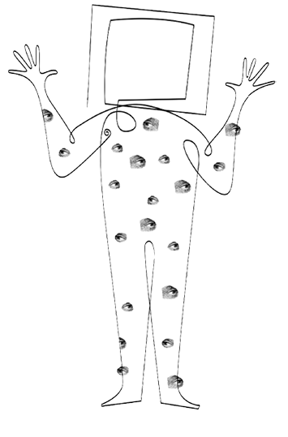
BİRİ BİZİ GÖZETLİYOR
Video kameralar kişisel anları kaydediyor, bilgisayarlar kişisel ayrıntı ve bilgileri depoluyor, iletişim ağları kişisel bilgiyi dünyanın kullanımına açıyor. Teknoloji, giderek insan mahremiyetine kastediyor. Teknolojiyi kullanan kurum ve kişiler, haklarında malumat elde ettikleri kişilerin mahremiyetine tecavüz ediyor. Artık bir gözetim toplumunda yaşıyoruz: Paranoyak değiliz, biri bizi gerçekten gözetliyor!
Mahremiyet, bizi dikkatlerin kısa ömürlü olduğu ve malumatın bilgiyle karıştırılabildiği bir dünyada, gereksiz yere yanlış tanımlanmaktan ve yargılanmaktan korur. Bir başka insan hakkındaki doğru bilgi, ancak karşılıklı içini dökme ile yavaş yavaş elde edilebilir. Bilgi çağında kişisel veriler hakkımızda bir ‘dijital biyografi’ yaratmak amacıyla kullanılıyor. Dünyamız giderek daha bürokratik ve gayrişahsî bir hüviyet kazanıyor ve veri tabanlarından elde edilen istatistikî veriler, hayatın pek çok alanında belirleyici oluyor. Bir kişiye kredi kartı verilip verilmeyeceği, kişinin işe girip giremeyeceği, borç alıp alamayacağı gibi pek çok konu, dijital arşivdeki dosyasına bakılarak hükme bağlanıyor. Veri tabanlarından elde edilen malumat, büyük şirketler tarafından alınıp satılır bir meta haline getiriliyor. Bu malumat sayesinde tüketici eğilimleri yönlendiriliyor, süpermarket rafları yeniden tasarlanıyor, yeni reklam stratejileri geliştiriliyor. Ne de olsa tükettiğimiz ürünler kimliklerimizi ele veriyor: Bugün, aldığımız ürünler bakımından tercih edebileceğimiz çok sayıda seçeneğe sahibiz ve bazı markalar kimi kişilik özelliklerini ve vasıfları simgeliyor. Sözgelimi Pepsi, Coca-Cola’ya göre kendisini daha asi, daha genç bir tüketiciye pazarlıyor.
Nette dolaştıkça sınıflanıyoruz, kategorize ediliyoruz, profilimiz çıkarılıyor ve her tıkımız izleniyor. Nette harcadığımız zaman arttıkça, hakkımızda eşi benzeri olmayan yaygınlık ve derinlikte, kalıcı bir kayıt yaratıyoruz. Sadece biz ekrana bakmıyoruz, ekran da bize bakıyor.
Veri tabanlarındaki malumatın hiç de kötücül amaçlarla kullanılmadığı, buradan pazarın yönlendirilmesi dışında bir ‘büyük birader sizi izliyor’ durumu çıkarılamayacağı söylenebilir. Ancak sorun kredi kartları, mağaza kartları, bilgisayar veri tabanları ve benzeri gözetim yöntemleriyle hakkımızda oluşturulan dosyanın, bizim irademiz ve arzumuz dışında başka amaçlar için kullanılabilmesidir. Mahremiyetin gayesi, kişisel malumatın sadece o kişilerin istediği amaçlarla kullanılmasını güvence altına almaktır. İnsan topluluk içindeyken bile mahremiyeti arzular, kalabalık bir lokantada dahi, yan masada oturanların konuştuklarımızı dinlemesini istemeyiz.
Siberâlem, kişisel bilgi devşirmenin en gözde mekânı. Web sayfaları, internette gezinen kişinin tüm hamlelerini gizlice izleyebiliyor. Böylece arzu, istek ve eğilimlerimizin arşivlendiği kalabalık bir dosya oluşuyor. Nette dolaştıkça sınıflanıyoruz, kategorize ediliyoruz, profilimiz çıkarılıyor ve her tıkımız izleniyor. Web mekânı, kullanıcı kişinin sayfayla nasıl bir etkileşime girdiği, neye ne kadar dikkat verdiği, sayfada ne kadar kaldığı bilgisini kendi veri tabanına aktararak bir sonraki sefer o kişiye uygun reklamları sunabiliyor. Nette harcadığımız zaman arttıkça, hakkımızda eşi benzeri olmayan yaygınlık ve derinlikte, kalıcı bir kayıt yaratıyoruz. Web sayfasındaki bilginin geçici olduğunu düşünüyoruz oysa internette pek az şey kayboluyor veya unutuluyor. Sadece biz ekrana bakmıyoruz, ekran da bize bakıyor.
Dijital devrim, malumatın yığılmasını ve birleştirilmesini kolaylaştırıyor. Böylece hayatlarımız incelenebilir ve araştırılabilir hale geliyor. Şirketler kişisel bilgilerimizi bir araya getiriyor. Milyonlarca dijital biyografi araştırılıp, ayrıştırılıp incelenebiliyor. Veri tabanlarının bazı kullanımları Kafka’nın Dava’sını hatırlatıyor: Güçlü bürokratik aygıt karşısında neden tutuklandığını anlamakta zorluk çeken Joseph K. gibi, pek çoğumuz kişisel bilgilerimizin toplanma ve kullanılma süreçlerine katılamamaktan ötürü bir acziyet, bir incinmişlik yaşıyoruz.
Mahremiyet, bürokratik kayıtsızlığa dur diyebilmek gücüdür. Hakkımızdaki bilginin nasıl, nerede ve ne amaçla kullanılacağını bilmek hakkıdır. Kişisel bilgilerimizin alınıp satılmasına, çöp mesajlarla gelen vurkaç reklamcılığa, kimlik kapkaçına, hayatın türlü gözetim vasıtalarıyla didik didik edilmesine dur diyebilmektir.
Bizi gözetleyenlere, arada bir kendimizi gösterip ‘cee!’ diyebilirsek, bu oyun daha şenlikli olabilir.
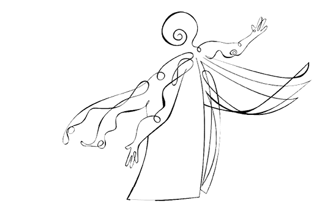
AÇ KENDİNİ!
Şöhret kimdir? Daniel Boorstin buna eğlenceli bir cevap veriyor: “Çok tanındığı için tanınan kişi.” Şöhret ahlaken nötrdür, ne iyi ne de kötüdür, o bir insandan türetilmiş sahte olaydır, insanın büyüklüğüne dair abartılı beklentilerimizi tatmin etmek için bilinçli olarak üretilmiş bir imgedir. Siyaset de imgenin egemenliğiyle artık uzak ve mesafeli kahramanların değil, şöhretlerin icra ettiği bir mesleğe dönüşmektedir. Eskinin kahramanları yetkelerini biraz da uzak ve gizemli olmalarına borçluydular, modern şöhretler yetkelerini aşina ve anlaşılabilir olmaktan devşiriyor ve gerçekte öyle olmasalar bile izlenim olarak duygusal ulaşılabilirlik havası yayıyorlar. Onlara çok yakın olduğumuz, istersek onlara değebileceğimiz havasını vererek şöhretlerini devam ettiriyorlar. Kahramanlar yaptıklarıyla ayırt ediliyorlardı, şöhretler imgeleri ve markalarıyla. Varlıkları toplum hayatına zerre kadar fayda sağlamayan zamane şöhretleri, hiç utanıp sıkılmadan “Biz markayız” diyebiliyorlar.
Geçmişin erdemi “Kendini bil!” sözünde yoğunlaşıyordu, bugünün dünyası “Kendin ol!” diyor. “Kendin olmak için kendini göstermen gereken bir çağda yaşıyorsun.”
Geçmişin erdemi “Kendini bil!” sözünde yoğunlaşıyordu, bugünün dünyası “Kendin ol!” diyor. “Kendin olmak için kendini göstermen gereken bir çağda yaşıyorsun.” Kimliklerin ve statülerin akışkan olduğu, altımızdaki zeminin sürekli kaydığı bir zaman diliminde geleneğe yaslanmak bize artık kim olduğumuzun ve kime güvenebileceğimizin ipuçlarını vermiyor. Kişisel hayatımızın ayrıntılarını yabancılara açarak onların güvenini kazanmak istiyoruz, karşılığında onların da kendi hayatlarını bize açmalarını bekliyoruz. Modernlik öncesinde gözetim vasıtalarıyla az çoğu izliyordu; televizyon çağında, çok azı izliyor ve nihayet internet çağında, çok çoku izliyor. Herkes herkesi izliyor. Gözetleme her yerde. Toplum hayatımız büyük bir göze ve büyük bir kulağa dönüşmüş durumda.
Mahremiyet ve güvenin ortaklaşa yaşantılarla, bir davaya baş koyuşla, bir ömrü birlikte yürüyüşle elde edildiği zamanlar geride kaldı. Artık mahremiyet ve güven kendini açmakla, hayatını başkalarına ifşa etmekle sağlanıyor. Güvenilirliğinizi kişisel hayatınızın ayrıntılarını açıklamakla sağlıyorsunuz, bakışları bireylerinin tümü üzerine çevrilmiş kalabalık önünde gizleyecek bir şeyiniz yok. “Senden gizleyecek bir şeyim yok ey kalabalık, senin güvenine mazhar olmayı dilerim, bak ruhum bütün çıplaklığıyla karşında!” Bireylerin değer ve güvenilirliklerini her gün kalabalık önünde ispat etmeleri gereken bir dünya, kimlik konusunda büyük endişe yaratan bir dünyadır. Mevcut olan toplumsal rollere uyum sağlamak yerine bireylerin kendi doğru benliklerini bulmaları ve kendilerini şüpheci bir dünyaya pazarlamaları beklenmektedir. Kendini ürün olarak sunan bir insan türüyle karşı karşıyayız, kendisini iyi satabilirse o ‘bir başarı öyküsü’dür, satamazsa başarısızlığın daniskası!
Kişisel hayatımızın ayrıntılarını yabancılara açarak onların güvenini kazanmak istiyoruz, karşılığında onların da kendi hayatlarını bize açmalarını bekliyoruz.
İmgenin gerçeklikten daha fazla öne çıktığı bir zamanda politikacılar da kendilerini şöhret hamuruyla yoğurmak derdindeler. Şöhret hamuruyla yoğrulmak, politikacıların da tıpkı sahnedeki aktörler gibi, ancak kendi duygularını ve heveslerini iyi oynadıklarında, bu oyun karşılarındaki kitleyi ikna edebildiğinde güvenilir bulunmaları demek. Politik inancın içeriği halk nezdinde itibar kaybederken politikacıların hayatı ilgi uyandırıyor. Basın ve televizyondaki mülakatları dikkatle izleyin; pek azında bir işin, bir düşüncenin konuşulduğunu fark edeceksiniz. Konuşulan kişinin aslında bizi hiç ilgilendirmeyen kişisel hayat ayrıntıları ve kendi hayatıyla ilgili özel seçimleri; sayfaları, dakikaları ve böylece zihinlerimizi işgal ediyor. Özel bilgiler internet üzerinde daha fazla yer aldıkça, kendini saklayan insanlar da üzerlerinde kendilerini açma yönünde bir basınç hissetmeye başlıyorlar.
Kayıtsız ve toplumsal açıdan atomize olmuş bir dünyada duyulmamak, işitilmemek ve görülmemek korkusu herkesin canını acıtıyor. Chat odalarında ha bire kendimizi yazıyoruz, televizyon programlarında ha bire sırlarımızı ortaya döküyoruz, gazete mülakatlarında kişisel hayatlarımızı cilalayıp kendi efsanemizi üretiyoruz. Herkes konuşuyor ama pek az insan dinliyor. Çok konuşmak, beraberinde sağırlığı getiriyor.
Bireylerin değer ve güvenilirliklerini her gün kalabalık önünde ispat etmeleri gereken bir dünya, kimlik konusunda büyük endişe yaratan bir dünyadır.
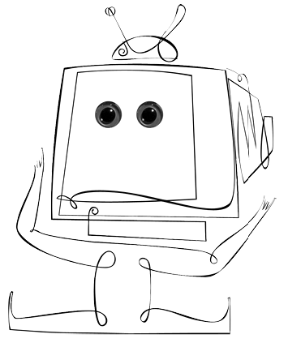
ÂLEMİN KRALI
Net üzerinde tanışanlar, net üzerinde konuşanlar, net üzerinde vuruşanlar. İnternet bize geçmiş zamanlarda olmayan yepyeni bir var olma biçimi sunuyor: Bilincin bedenden azat olduğu yeni bir var olma biçimi. Bedenimiz buradayken, zihnimiz başka âlemlerde gezinebiliyor. İnternet kimilerine göre dünyanın en büyük arşivleme sistemi, nereyi tıkladığınız kim olduğunuzu ele veriyor. Bir yönüyle bilgi çöplüğü, bir yönüyle de insana yeni tanışma imkânları veren, dünyayı hızla ayağınıza getiren bir teknoloji. Artık topraklar değil imgelem fethediliyor.
İnternetin insanı dost sıcağından, yüz yüze yârenlikten alıkoyan ve yalnızlaştıran bir doğası var. Toplumsal bağların mumla arandığı bir çağda ekran teknolojileri (önce televizyon ve sonra bilgisayar), her insanı yalnız bir adacık haline getiriyor. Siberâlem, televizyondan farklı olarak, bir imgeyi izlediğimiz duygusu yerine, bir dünyanın içinde bulunduğumuz yanılsamasına yol açıyor. Bu âlemde ekran, yani bizimle sanal dünya arasındaki sınır çözünüyor, yok oluyor ve biz ekranın ötesine geçebiliyoruz. Böylece netle birlikte kimlik deneyleri için uygun bir vasat bulabiliyoruz, kendimizi farklı biçim ve kimliklerle takdim ediyor, oyunlar oynuyor, kendimizi keşfediyoruz. Net ortamı, insanın kendisine ve dünyaya farklı biçimlerde bakması, belki yüz yüze kuramayacağı kimi toplumsal ilişkileri bir klavye darbesiyle başlatması için biçilmiş kaftan.
İnternet çağında hiç yüz yüze görüşmeyeceğimiz insanlara giderek daha fazla açılmak zorunda kalıyoruz. Hayatımızın fazlasıyla kişisel kimi ayrıntılarını karşımızdaki insanların tepkilerini ölçme şansına sahip olmadan ifşa ediyoruz. İşte bu yüzden sanal ilişki ve aşklar, gerçek hayal kırıklıkları doğurabiliyor. İnsan yüzünün görülüp hissedilmediği bir ilişki, içinde gerçek bir ahlaki öz barındırmıyor.
ABD’de yaşayan ve bir iki ay boyunca evden dışarıya çıkmayan bir Türk genciyle görüşüyordum. Söz arasında arkadaşı olup olmadığını sordum. “Çok iyi arkadaşlarım var” dedi, “hemen her şeyi konuşabiliyoruz. Günlerce evden çıkmadan onlarla konuşuyorum. Ama dünyanın farklı yerlerinde oldukları için, zaman farkı nedeniyle bilgisayar başından kalkamıyorum.” Bu delikanlı on-line arkadaşlarından birisiyle tanışmaya niyetlenmiş ancak yüz yüze görüşme hüsranla sonuçlandığı için ilişkileri kopmuştu.
İnternet özel ve kamusal alan arasındaki sınırlarımızı muğlâklaştırıyor. Çoğulcu bir toplumda neyi açıklayıp neyi kendimize saklayacağımızı bilemiyoruz. Teşhircilik giderek yaygınlaşan bir ruh haline dönüşüyor. Teşhirci arzularını denetleyemeyenler, sanal bir izleyici kitlesiyle duygusal bağ kurdukları yanılsamasına kapılıyorlar. Yabancılar önünde kendi ruhunu açmak, kendi yaralarını göstermek, kendini pazarlamanın yeni bir yöntemi olarak yürürlüğe sokuluyor. Elektronik teknolojiler, erkekler ve kadınlar, çocuklar ve yetişkinler arasındaki sınırları da belirsizleştiriyor. Bu grupları birbirinden ayıran sınırlar silindikçe, her bir grup diğeri gibi davranmaya başlıyor.
Hayatımızın fazlasıyla kişisel kimi ayrıntılarını karşımızdaki insanların tepkilerini ölçme şansına sahip olmadan ifşa ediyoruz. İşte bu yüzden sanal ilişki ve aşklar, gerçek hayal kırıklıkları doğurabiliyor.
“Siberâlemde kendimizi ifşa etmenin, iç dünyamızı dökmenin ne zararı var?” denebilir. Öyle ya, içini döken rahatlamaz mı? Fakat sosyal psikoloji çalışmaları bize şunu gösteriyor: Duygusal olarak kendini ifşa eden insanlar, karşılığında olumlu bir toplumsal destek alabiliyorlarsa harika, alamıyorlar veya olumsuz tepkiler alıyorlarsa, kendilerini daha da kötü hissedebiliyorlar. Duygularımızı başka insanlara açmak eğer yalnızlığımızı azaltıyor ve bizi toplumsal ağlara eklemliyorsa iyi, ama bizi kabul eden bir izleyici kitlesi yoksa ve boşluğa konuşmuş oluyorsak, kendimizi kötü hissediyoruz.
Bir zamanlar bir söz vardı, sanırım arabesk bir şarkının sözleri, ‘âlem buysa kral benim’ diyen. Siberâlemde galiba herkes kral. Elektronik bir tebaası olan, yalnız ve evsiz krallar.
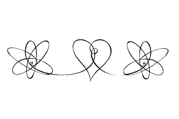
BİZ VE ONLAR
Jane Elliot, Iowa’da üçüncü sınıf öğretmeniydi. Hepsi kırsal kesimden beyaz Hıristiyan olan öğrencilerinin çok korunaklı bir ömür sürdüklerini ve dünyadan bîhaber olduklarını düşünüyordu. Onlara önyargı ve ayrımcılığın nasıl bir şey olduğunu, bizzat yaşatarak öğretmeye karar verdi. Bu amaca ulaşmak için, sınıfını göz rengi esasına dayalı olarak ikiye böldü.
Mavi gözlü çocukların kahverengi gözlü çocuklara göre daha üstün olduğunu söyledi: Bu çocuklar daha zeki, daha şirin, daha güvenilirdi. Kahverengi gözlü çocukların özel atkılar kullanmalarını, böylece daha alt grubun bir üyesi olarak hemen tanınmalarının mümkün olacağını söyledi. Ve mavi gözlü çocuklara bazı ayrıcalıklar verdi: Mavi gözlüler teneffüslerde daha uzun süre oynayabiliyor, kafeteryada ilave yemek alabiliyor, sınıfta da övülüyorlardı.
Öğretmen, kısacık bir sürede sınıfında önyargılı bir toplum mikrokozmosu yaratmıştı. Daha önce birbiriyle işbirliği yapan, dayanışma içindeki grup gitmiş, yerine birbirine iyi gözle bakmayan, aralarına bölünme tohumları ekilmiş iki rakip grup gelmişti. ‘Üstün’ mavi gözlü çocuklar kahverengi gözlü çocuklarla dalga geçiyor, onlarla oynamayı reddediyor, onları öğretmene şikâyet ediyor, onlar için yeni kısıtlama ve yasaklar getirilmesini istiyor ve hatta, onlarla okul bahçesinde yumruk yumruğa kavgaya tutuşuyorlardı. ‘Aşağı’ kahverengi gözlü çocuklar sıkılgan, çökkün ve keyifsiz hale gelmişlerdi. Bir gün içinde ders başarıları da düşmüştü. Ertesi gün öğretmen, göz rengiyle ilgili düşünceyi değiştirmeye karar verdi. Korkunç bir hata yaptığını, aslında üstün olanların kahverengi gözlü çocuklar olduğunu söyledi ve ‘alt’ grubu temsil eden atkıları mavi gözlü çocuklara verdi. İşler tersine dönmüştü. Kahverengi gözlüler büyük bir şevkle intikam aldılar. Üçüncü gün, öğrenciler bunun bir oyun olduğunu öğrendiler. Bu öğrenciler, yirmi yıl sonra bir mezuniyet kutlamasında bir araya geldiklerinde, öğretmenlerinin yaptırdığı bu alıştırma sayesinde, daha az önyargılı ve ayrımcılığa karşı daha duyarlı bireyler olduklarını söylediler. Hepsi de bu deneyimi öğrencilik hayatlarının en çarpıcı eğitimi olarak hatırlıyordu.
Önyargıda ilk basamak, gruplar oluşturmaktır: ‘Biz ve onlar’ dediğimiz anda, bizi kayırıp onları lanetleyeceğimiz bir iklim yaratmış oluruz. Kendi grubumuzu her şeye rağmen övülmeye, dışarıdaki grubu da yerilmeye layık buluruz.
Önyargıda ilk basamak, gruplar oluşturmaktır: ‘Biz ve onlar’ dediğimiz anda, bizi kayırıp onları lanetleyeceğimiz bir iklim yaratmış oluruz. Kendi grubumuzu her şeye rağmen övülmeye, dışarıdaki grubu da yerilmeye layık buluruz. Zannederiz ki ‘zenciler birbirine benzer’ ve bizim dışımızdaki grup birbirinin aynı insanlardan oluşmaktadır. Stereotipler oluştururuz, belirli bir grubun üyelerinin kolayca tanımlanmasını sağlayan basmakalıp inanışlardır bunlar. ‘Kadın sürücü’lerin beceriksizliğinden eminizdir, mensup olduğumuz ideolojiye göre ‘dinci’leri (bu sözcüğün kendisi, tanımlanmak istenen gruba karşı açık bir saldırganlık içeriyor), başını örten veya ‘modern kadın’ları ‘ucuz’ bir stereotipe tıkıştırırız. Toplumda kaynakların bölüşümü konusunda bir maraza çıktığında, önyargılar çoğalır. İki Almanya birleştiğinde işsiz kalacağından korkan Doğu Almanlar Türklere karşı ırkçılık yapabilir. Önyargı ve ayrımcılık buhran zamanlarında da tırmanır. Bir günah keçisi ilan etmek gerektiğinde, yolsuzluk, ahlaksızlık ve siyasi istikrarsızlık ülkeyi kasıp kavurduğunda, suçu üzerine yıkacak bir günah keçisi bulmak icap eder. Türkiye dönem dönem komünizm, Kürt meselesi veya irtica ile korkutulur. İçinde bulunduğumuz toplumun özgüveni sarsıldığında da dışarıdakilere karşı önyargı tırmanır. Doğudan şehit cenazeleri gelmeye başladığında, oradan gelen gariban tarım işçileri birden hasım kategorisine yazılır.
Bu topraklarda birbirimize hoşça bakarak yaşayabilmek için ‘kalpten kalbe giden yol’u diriltmemiz, ‘kibir ve önyargı’dan sıyrılarak yârenlik ve sohbeti ihya etmemiz gerekiyor.
Peki önyargı ve ayrımcılığı nasıl önlemeli? Öncelikle yurttaşlar arasında denge ve adalet sağlayıcı bir aygıt olarak devletin, bu günahlardan uzak durması gerekir. Farklı dünya görüşlerinden insanların eşit koşullarda karşılaştığı, birbirine değdiği, birbirini anlamak için çaba harcadığı buluşmalar, önyargıyı azaltır. Göz rengimizin mavi veya kahverengi olması bizi birbirimize üstün kılmaz. Dünya görüşlerimizin şu veya bu olması da.
Bu topraklarda birbirimize hoşça bakarak yaşayabilmek için ‘kalpten kalbe giden yol’u diriltmemiz, ‘kibir ve önyargı’dan sıyrılarak yârenlik ve sohbeti ihya etmemiz gerekiyor.
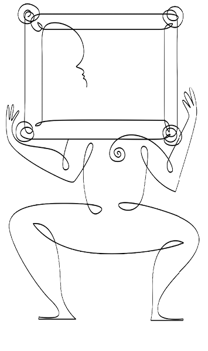
KİMLİKLER
1920’li yıllarda İtalya’da faşist politikalara verilen destek giderek yayılırken, Faşist Parti’den bir yetkili, sosyalist bir köylüyü Faşist Parti’ye katılması yönünde ikna etmeye çalışıyormuş. “Bu nasıl olabilir?” demiş potansiyel aday: “Nasıl katılabilirim ki partinize? Babam bir sosyalistti, dedem de bir sosyalistti. Faşist Parti’ye asla katılamam.” “Bu nasıl bir akıl yürütme?” demiş Faşist yetkili, “eğer baban bir katil, deden de bir katil olsaydı ne yapacaktın?” “Haa, o zaman” demiş bizim sosyalist köylü, “elbette, tereddütsüz Faşist Parti’ye katılırdım.”
Dünyaya buyurmak isteyenler, kimlikleri katı ve tekil aidiyetler olarak tanımlıyor. Bu şekilde George W. Bush gibi faşistin feriştahı olan bir adam, kalkıp ‘İslamofaşist’ gibi çirkin bir ifade kullanabiliyor. Üstelik babasının kasaplığı da tescilli iken. Bu tanıdık bir hile: Hedeflenen kategorideki insanlar yanlış tarif edilir ve bu yanlış tarifin, hedefteki insanların tek anlamlı özelliği olduğu vurgulanır. Sonuçta düşman olarak tarif edilen kişinin insanlıktan tenzil-i rütbeye uğratılması, onun yok edilmesine de cevaz verecektir.
Çoğul kimliklerimiz, bir çiçek tarhının üzerinde süzülen rengârenk kelebekler gibi dünyayı renklendiriyor, şenlendiriyor ve tüm zorbalıklara karşın, birbirimizle konuşmamızı mümkün kılıyor.
Medeniyetlerin çatışmasından bahsedenler de dünyayı İslam dünyası, Batı dünyası, Hindu dünyası şeklinde bölerek insanları katı kutucuklar içine yerleştiriyorlar. İnsanlar arasındaki farkı, dinler ekseninde tanımladığınız zaman, değişik sınıflar ve meslekler, diller ve milliyetler, zengin ve fakir, farklı politik mensubiyetler arasındaki ayrımlar önemini kaybediyor. Bu görüş, medeniyetlerin birbirinden alıp verecek bir şeyi olmadığını ve önünde sonunda kavgaya tutuşacaklarını öngörüyor. Bu bakış, yalnızca medeniyetlerin kendi içindeki farklılıklarını gözden kaybettirmiyor, aynı zamanda medeniyetlerin birbiriyle etkileşimini de görmezden geliyor. Böylece dünya, birbiriyle kavgaya tutuşmaya hazır bir din ve medeniyetler federasyonu olarak sunulmuş oluyor. Bu ideolojik el çabukluğunda, yeryüzünü ateşe vermeye niyetli bir tamahkârlığın izleri var.
Hedeflenen kategorideki insanlar yanlış tarif edilir ve bu yanlış tarifin, hedefteki insanların tek anlamlı özelliği olduğu vurgulanır. Sonuçta düşman olarak tarif edilen kişinin insanlıktan tenzil-i rütbeye uğratılması, onun yok edilmesine de cevaz verecektir.
Nobel ödüllü iktisatçı ve yazar Amartya Sen, Identity and Violence (Kimlik ve Şiddet) adlı kitabında, yaşadığımız dünyada tekil aidiyetlerden ve tekil kimliklerden söz edilemeyeceğini tartışıyor. İnsanları tek bir bağlılık üzerinden tanımlayan ideolojiler, onların sadece ve sadece bir gruba mensup olabileceklerini öne sürüyor. Oysa her birimiz, açıkça pek çok gruba mensubuz. Farklı aidiyetler arasında ‘ya bu, ya öteki’ şeklinde bir seçim yapmamız gerekmiyor, sadece önem sırasına koyuyor ve farklı bağlamlarda farklı kimliklerimizi öne çıkarıyoruz. Yaptığımız seçimler, belirli bir bağlamda hangi öncelik ve sadakatin bizi daha çok bağladığını, hangi kimliğimize daha fazla önem atfettiğimizi belirliyor. Yazara göre dertli dünyamızın temel umut kaynaklarından birisi, kimliklerimizin çoğulluğunda yatıyor. Sahip olduğumuz farklı kimlikler birbiri içine geçerek kategorileştirmeye direniyor ve keskin ayrımları yumuşatıyor. İnsanlığımıza yönelen en büyük saldırılardan birisi, aramızdaki farklılıkların törpülenerek, hepimizin bir kategoriye tıkıştırılması.
Amartya Sen, Batılıların ‘ılımlı Müslüman’ arayışının bir kafa karışıklığıyla malul olduğunu düşünüyor. Bu arayış politik inançlardaki ılımlılık ile dinî inançtaki ılımlılığı birbirine karıştırıyor. “Bir insan, dinî inancı çok kuvvetli olduğu halde hoşgörülü politikalar izleyebilir” diyor Sen: “12. yüzyılda Haçlılarla İslam için cansiperane savaşan Selahaddin, Avrupa’daki tahammülsüzlükten kaçan Yahudi bilgin İbn Meymun’a sarayında onurlu bir yer bahşetmekte hiç tereddüt etmemişti. 16. yüzyıl başında Roma’da ‘sapkın’ Giordano Bruno yakılırken, Müslüman olarak doğup Müslüman olarak ölen büyük Moğol hükümdarı Ekber, Agra’da azınlık haklarının yasal statüsü için büyük bir proje yürütüyordu.”
İnsanları tek bir bağlılık üzerinden tanımlayan ideolojiler, onların sadece ve sadece bir gruba mensup olabileceklerini öne sürüyor. Oysa farklı aidiyetler arasında ‘ya bu, ya öteki’ şeklinde bir seçim yapmamız gerekmiyor. Sadece farklı bağlamlarda farklı kimliklerimizi öne çıkarıyoruz.
İnsanları tek kimlik üzerinden tanımladığınızda cadı avına çıkmak kolaylaşıyor. Mesela ‘başörtülüler’ dediğinizde başını örten insanların hepsinin birbirine benzediğini, benzer davranış kalıplarına sahip olduğunu ima etmiş oluyorsunuz. Oysa din ve ideoloji, insana bir kıvam verdiği kadar, insanın ruhunda da bir kıvam buluyor. Görünüşleri birbirine benzese de insanların iç dünyaları farklı ve biricik. Her birimizin kendimizi ait hissettiğimiz pek çok mensubiyet var. Çoğul kimliklerimiz, bir çiçek tarhının üzerinde süzülen rengârenk kelebekler gibi dünyayı renklendiriyor, şenlendiriyor ve tüm zorbalıklara karşın, birbirimizle konuşmamızı mümkün kılıyor.
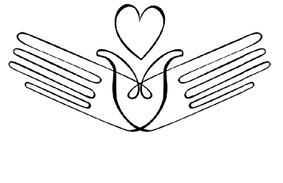
ÖTEKİYLE TAMAMLANMAK
Türkiye’de milliyetçilik yükseliyor mu? Milliyetçiliğe yaslanan bir film gişe rekorlarını, Türklerin çılgınlıklarını anlatan kitaplar satış rekorlarını alt üst ediyor. Çanakkale, bir süredir ziyaretçi akınına uğruyor. Milletçe birden kendimizi çok mu sevmeye başladık?
Bana sorarsanız, milliyetçilik değil hamaset yükseliyor. Büyüklenmeci tutumlar, aslında özde ne kadar incinebilir olduğumuzu ele veriyor. Kendimize güvenmiyoruz. Çaresiz ve incinmiş insanlar, ‘milli gurur’u kurgusal olsa da onaran, bir film veya kitap süresince kendilerini iyi hissettiren ürünleri, duygusal boşalma aracı olarak kullanıyorlar. Ancak sokaklarda yükselen hamaset, etliye sütlüye karışmayan ve sorumluluk almayan bir kolaycılığı gizliyor. Milli duygulara daha fazla sahip çıkmanın gerektirdiği ahlaki duruş, dürüstlük ve çalışkanlık gibi hasletlerin izine rastlanmıyor. Kalabalıklar, bir ‘kolektif illüzyon’un peşinde sürükleniyor ve bu yanılsamayı besleyenleri kahraman, ona karşı duranları hain ilan ediyor.
İnsanları anlamakta stereotipler kullanırız, basitleştirmeler suretiyle onların davranışlarını daha kolay anlayabiliriz. Kategorilere ayırarak düşünürüz. Böylece toplumsal dünyanın geniş karmaşıklığını başa çıkabileceğimiz boyutlara indirmiş oluruz. İnsanları kategorilere yerleştirerek hayata hızlı, sağlam ve düzgün bir biçimde uyum sağlamış oluruz. Stereotipleştirmek suretiyle, dışarıdaki grubun üyelerinin ‘nevi şahsına münhasır’ özelliklerini bir kalemde siliveririz. Bir din, bir sınıf, bir milliyet etrafına çitleri çekip de bir grup tanımladığımız zaman, onların kendi içlerinde birbirinin yerini tutan, birbiriyle değiştirilebilen birimler olduğunu düşünürüz. Böylece yekpare bir insan imgesi devşiririz. Kendi grubumuzla dışarıdaki grup arasına çektiğimiz bu çizgi, yanlı düşünme ve önyargının temelini oluşturur.
İnanç ve eylemleri bizimkilerle çelişen insanlara kolayca kötülük atfedebiliriz. İki grup arasında çatışma çıktığında rakip grubu kolayca düşman hanesine yazıveririz. Bu otomatik ve abartılı kendini koruma süreci, hayatlarımıza acı ve sürtüşmeden başka bir şey getirmez.
İnsan zihni temelde karşıtlıklar ekseninde düşünür. Bütün kültürlerde, insanları sevilen ve sevilmeyen kategorilere yerleştirme eğilimi vardır. Katı düşünce, ideoloji ve önyargı birbiriyle yakından ilişkili durumlardır. Kapalı zihinler, katı ve kendilerininkinden farklı inanış ve düşüncelerin geçişine izin vermeyen zihinlerdir. Kendisini çaresiz hisseden, yalnız, gelecekten korkan ve sorunlarının çözümü için bir kurtarıcı bekleyen insanlar, kapalı zihin yapısına daha kolay savrulurlar. Dış tehditler, böylesi kişilerin düşünce tarzlarını daha da katı ve kategorik olmak yönünde zorlar.
İnanç ve eylemleri bizimkilerle çelişen insanlara kolayca kötülük atfedebiliriz. Onlardan bir düşman yaratmak çok kolaydır. Dışarıdaki grubu oluşturan bireyler tehlikelidir ve bu his bize bir savunmacılık ve incinebilirlik durumu olarak döner. İki grup arasında çatışma çıktığında rakip grubu kolayca düşman hanesine yazıveririz. Bize tahakküm etmek isteyen, bizi kandırmak veya istismar etmek isteyen bireylerden oluşan hayalî bir dünya yaratırız. Bu otomatik ve abartılı kendini koruma süreci, hayatlarımıza acı ve sürtüşmeden başka bir şey getirmez. Aslında düşman, çoğu zaman, kendi ruhumuzun karanlık taraflarını ve barbarlığını yansıttığımız kimsedir.
Üzerinde yaşadığımız topraklar, çatışmanın değil ahengin, bölmenin değil birleştirmenin, nefretin değil sevginin, kibrin değil tevazuun köklü geleneğine sahiptir.
Bir kez kendimize bir öteki, bir düşman bulduk mu sıra onu insanlıktan çıkarmaya gelir. Atfettiğimiz olumsuz özelliklerle onu kendi varlığımızdan daha aşağı bir kategoriye yerleştiririz. Böylece ona saldırmak veya onu incitmek meşrulaşmış olur. İşte zurnanın zırt dediği yer burasıdır. Kalabalıkların millî hisleri Türkiye toplumunu oluşturan başka etnik ve dinî unsurlara karşı öfkeye, önyargıya, tarafgirliğe dönüş(türül)üyorsa, orada zehirli bir milliyetçilikten söz edebiliriz. Kalabalıklar, ‘kolektif bir illüzyon’ etrafında kolayca baştan çıkarılabilir. İnsanların milli hislerinin bir öfke ve nefret nesnesi yaratmakta asla kullanılamaması gerekir. Milliyetçilik, başka/öteki/bizden farklı insanların insanlıktan tenzil-i rütbeye uğratılması üzerinden prim yapamamalıdır. Böylesi bir gayret, bu topraklara ihanet anlamına gelecektir.
Üzerinde yaşadığımız topraklar, çatışmanın değil ahengin, bölmenin değil birleştirmenin, nefretin değil sevginin, kibrin değil tevazuun köklü geleneğine sahiptir. Bu topraklarda kendini sevmek; aynı coğrafyayı paylaştığımız farklı din ve kökenlerden insanları da sevmek, ortak hikâyelerle ağlayıp gülmek, ‘öteki’yle tamamlanmak demektir.
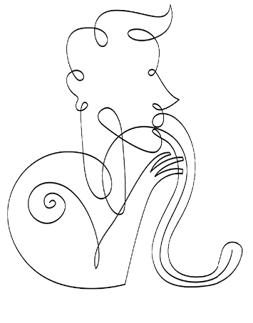
ZEHİRLİ DİL
Yazılacak olan yazıldı, söylenecek olan söylendi. Güvercinler sessizce yürüyen kalabalığın üzerinden uçuştu. Hrant Dink, Türkiye yetimhanesinin son kurbanı olarak, bizi kendi eksiklik ve riyakârlığımızla yüzleştirdi.
Zehirli sözlerin, şirazesinden çıkmış böbürlenmenin, ötekinin tahkir ederek kendini yüceltmenin o yanıltıcı serinliğinden haykıranlar, bu alçakça cinayetle birlikte sus pus oldular. Çünkü biliyorlar ki eyleme maşalık yapan üç beş avare psikopat, bu zehirli fidelikte büyüdü. Onların tahripkâr ve ırkçı söylevleri/söylemleri iledir ki ruhunu düşüncenin örsünde hiç dövmemiş, yeni bir söz söylemenin heyecanını hiç tatmamış hodbin güruhu, memleket kurtarıcılığına özendi. Hayatta hiçbir işi layığınca yapamamış, bir kızı efendice sevememiş, bir işin ucundan tutup helal yoldan rızık aramamış, hayatın kutsal bir değer olduğunu idrak edememiş ham insanlar, bu zehirli dille birlikte kendilerine kurtarıcı misyonu biçmeye yeltendiler. Bu zehirli dil, o boş hayatlara elektrik verdi, onları meydanlarda linç kalabalığı haline getirdi, sokaklarda eli kanlı katillere dönüştürdü.
Onları sahneye iten zehirli dille savaşmamız gerekiyor. Psikopatlardaki kahramanlık dürtülerini harekete geçiren paranoyak dili deşifre etmemiz lazım.
Bize çılgın Türkler gerekmiyor artık, bize aklı başında, çalışkan, efendi, dinlemeyi ve konuşmayı bilen Türkler gerekiyor. Zehirli dil bu ülkenin matbuatından, yayın istasyonlarından, siyasetinden, gündelik hayatından tasfiye edilmeli.
Vatan elden gidiyor. Ülke bölünüyor. Memleket satılıyor. Şu veya bu görüştekiler, şu veya bu etnik kökenliler memlekete ihanet ediyor. Aman aman, memleketin boşta gezer takımı size büyük ihtiyaç var, yetişin yangını söndürün!
Hakikati sadece kendisinde teşhis eden, başka gerçeklikler de olabileceğini, kendisinin de yanılabileceğini asla kabullenmeyen, uçan kuştan geçen buluttan nem kapan o paranoyak dil. Bu dil, sıradan yurttaşı kışkırtmaz. Temiz ve dürüst insanları hayata bağlayan küçük sevinçler vardır. Bu dil ancak hiçbir şey için emek harcamamış, alın teri ve sebat nedir bilmemiş, kendisini bomboş hisseden ve ancak büyük bir ülkü ile bu boşluğu iyileştirebileceğini düşünen kolaycı avareleri kışkırtır. Bu dil içe kapanmayı, başkasını dinlememeyi, Orwell’yen ‘cehalet kuvvettir’ ilkesini telkin eder. Çünkü milletlerin içe kapanma anları kimsenin kimseden hesap soramadığı zamanlardır.
“Çıkalım ve daha efendi insanlar olalım, daha ahlaklı insanlar olalım, birbirimize daha fazla saygı duyalım, sürtüşme noktalarını en aza indirerek aramızda bir konuşma kültürü geliştirelim” demiyor da o zehirli dil tarikatinin müntesipleri; bölüyor, ayırıyor, tahkir ediyor. Diğerini alçaltarak kendini yükseltiyor. Sömürge valilerinin, vardıkları kıyılarda sömürgeleştirdikleri uluslara uyguladığı yöntemler her ne ise, onu benimsiyor. Diğerini insanlıktan uzaklaştırıyor ve böylece onun üzerinde uygulayacağı şiddet ve zulmü rasyonalize ediyor.
Hrant Dink’in, insanları o uzun, onurlu ve sessiz yürüyüşte birleştiren cenazesi, Türkiye’de bir zihniyet devrimine öncülük ediyor. Bu toprakların evladı, bu toprakların sevgilisi bir insan, hayatı gibi ölümüyle de karanlığa meydan okuyor. Bu yürüyüş, bir milat olmalı: Zehirli dil, Türkiye lügatlerinden silinmeli. Kıyıcı sözcüklerle başkasının giyimine, düşüncesine, inancına, etnik veya varoluşsal kimliğine saldıran, bu kudurgan üslubu varoluşlarının merkezi haline getiren, aşırılıkla, toplumu tedhiş etmekle kendilerinde bir güç vehmeden ‘soğuk savaş artığı’ oluşumlar, cinayete yardım ve yataklık etmenin utancıyla hep başları önde dolaşmalı. Öyle utanmalılar ki aramızda dolaşırken değil seslerini çıkarmak, başlarını kaldırıp gözlerimizin içine dahi bakamaz olmalılar.
Bize çılgın Türkler gerekmiyor artık, bize aklı başında, çalışkan, efendi, dinlemeyi ve konuşmayı bilen Türkler gerekiyor. Türkiye yetimhanesinde artık masallarla avunma zamanı geride kaldı. Zehirli dil bu ülkenin matbuatından, yayın istasyonlarından, siyasetinden, gündelik hayatından tasfiye edilmeli. Bizi korkutan, bizi korkutarak kendilerine ikbal isteyen adamlar tasfiye edilmeli. Dink’in cenazesindeki o sessiz, uzun ve onurlu yürüyüşten geriye mutlaka sessiz bir devrim kalmalı. Bu, bir milletin acısıdır ve bu acı bizi büyütmeli.
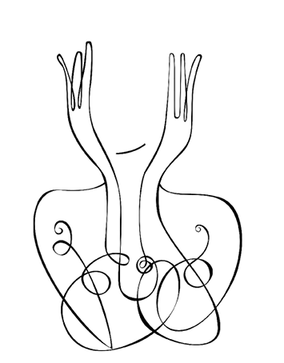
KOMŞUNUN YÜZÜ
Yaşadığımız günlerin belirgin vasıflarından birisi de güvenin azalıp şüphe ve belirsizliğin çoğalması. Gerçeklik artık o bildiğimiz şey değil, hakikat aramızda bir yabancı. Farklı dünya görüşlerinin ve çeşitliliğin hüküm sürdüğü bir toplumda, gerçekliği, ‘paylaşılan bir dünya görüşü’ olarak tanımlamak çok zor.
O halde yapmamız gereken şey basit: Ben kendi dünya görüşümden daha fazla şüphe eder ve senin dünya görüşüne daha fazla hürmet eder, onu daha fazla kabullenirim. Fakat böyle bir müphem iklimde yapmam gerekenin tam tersini yapıyor ve kendi dünya görüşüme daha fazla tutunup seni daha fazla itiyorum. Böylece herkes kendisini toplumun kenarında hissediyor, yalnızlaşıyor, yabancılaşıyor. Bu yalnızlaşmayı yenmek için de kendi alt kültürüne çok güçlü bir biçimde bağlanıp toplum içindeki diğer kültürlere güvensizlik geliştiriyor.
Topluluk çöküyor, onun yerini titizlikle korunan kimlikler alıyor. Birer güvenlik sığınağı olarak ‘doğal yurt’larımız kimliklerimiz oluyor. ‘Komşunun yüzü’ bir ahlak alanı olmaktan çıkıyor. “Bir komşunun yüzü” diye yazmıştı Levinas, “benim için, her özgür rızayı, her anlaşmayı, her sözleşmeyi önceleyen, istisnai bir sorumluluk anlamına gelir.” Bırakın sorumluluğunu üstlenmeyi, komşuların birbirini boğazladığı, dünün komşularının bugünün düşmanları olduğu günleri yaşıyoruz. İnsanlar kendilerini tehdit altında hissettikçe ideolojik kimliklerini daha bir parlatıyor ve kabile psikolojisinin saçakları altına sığınıyor. Orada kendisi gibi olanla gücünü birleştirerek, ‘yabancı’ olanı, ‘dışarlıklı’ saydığını, ‘kötü ruh’u kovma ayinleri yapıyor.
Topluluk çöküyor, onun yerini titizlikle korunan kimlikler alıyor. Birer güvenlik sığınağı olarak ‘doğal yurt’larımız kimliklerimiz oluyor. ‘Komşunun yüzü’ bir ahlak alanı olmaktan çıkıyor.
Kendi kabilesinin üstünlüğüne ve seçilmişliğine inanma, bence daha derin bir emniyetsizlik hissine işaret ediyor. Kesin inançlılar, ötekine hayatı dar etmek isteyen ve onu kendisine amansız bir hasım belleyenler, büyük olasılıkla kendi kabilelerinin sağlamlığından ve hakikatinden kuşku duyuyorlar. Şüphe ve güven aşınması çağında, mekân refleksleri had safhada: “Sen benim denizimde yüzme, benim bahçeme yaklaşma, gözüme görünme!” İyi ama birbirimize görünmezsek konuşamayız ki. Millet olarak acilen ‘demokratik konuşma kültürü’ne kavuşmamız, yanlış/farklı bulduğumuz ideolojilerin mensuplarıyla, serinkanlı ve dostça konuşmayı öğrenmemiz gerekiyor.
Siyasetin paraya hükmetmekten özge bir niyetinin olmadığı, insanların yolsuzluğun türlü biçimlerine bulaştığı, kamu dairelerinde alenen rüşvet verilen, halkın parasının beyaz yakalı antisosyaller tarafından hortumlandığı bir ülkede güvenden söz etmenin ne âlemi var? Devletin en tepelerinde bile nezaketsizliğin kaide haline geldiği bir ülkede, insanlar nasıl olup da birbirine güvenecek?
Bu ülkede siyaset ve medya dilinin fazlasıyla tahripkâr, zenofobik ve hamasi olduğunu düşünüyorum. Bir dil temizliğiyle işe başlayabiliriz. İnsanların birbirine göründüğü kamusal mekânları çoğaltabiliriz. Farklı dünya görüşünden insanlar birbirinin gazetelerinde yazabilir, televizyon kanallarında program yapabilir. Gazeteleri resmî bültenler olmaktan çıkarıp sivil kurumlar olarak yeniden yapılandırabiliriz. Unutmayalım ki yabancı, kendi fantezi ve korkularımızı yansıttığımız, bizim öcüleştirdiğimiz kişi veya gruptur. Konuşma dilini simgeler etrafında inşa etmeyi bırakarak, ikonlar yaratıp onlara kutsallık atfetmekten vazgeçerek işe başlayabiliriz. Bizim gibi olmayanı cadılaştırmayı, fikirlerini beğenmediklerimizi hain ilan etmeyi bırakabiliriz. Kızmadan, bağırmadan karşımızdaki insanı dinleyebiliriz.
Eğer namuslu insanlar isek, nerede ve hangi çatı altında olursak olalım birbirimizi dinlemeye, sesimizi çoğaltmaya, sesimizi birleştirmeye ihtiyacımız var. Uygarlık, bir tanıma göre, insanın insana bağımlılığından filizlenir. Komşularız biz; birbirimizin yüzünde sorumluluğumuz başlıyor. Türkiye’nin, onca tufandan sonra artık ‘haram lokma yemeyenler’in ittifakına ihtiyacı var. Erdemli ve soylu insanların, ruhu olan insanların, ideolojik saçak altlarından çıkarak bu gönül birliğini kurmaları gerekiyor.
Bir dil temizliğiyle işe başlayabiliriz. İnsanların birbirine göründüğü kamusal mekânları çoğaltabiliriz. Gazeteleri resmî bültenler olmaktan çıkarıp sivil kurumlar olarak yeniden yapılandırabiliriz. Bizim gibi olmayanı cadılaştırmayı, fikirlerini beğenmediklerimizi hain ilan etmeyi bırakabiliriz.
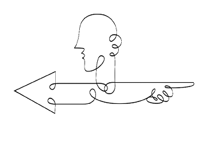
İKİ TÜRKİYE
Bir meslektaşım ailesini Sirkeci garından uğurlamış, sonra peronları ağır ağır terk eden vagonların ve tren camlarına yansıyan insan suretlerinin büyüsüne kapılıp, fotoğraf çekmeye başlamış. İş çıkışı yorgun argın evlerine dönen insanlar, tıklım tıkış vagonlar, kâh sevinçli kâh üzgün yüzler. Çok insan, az vagon. İnsan bedenlerinin birbiri üzerine yığıldığı saatler. Meslektaşımın turist olduğunu düşünen vatandaşlardan biri yüksek sesle söylenmeye başlamış: “Çek, çek! Bütün rezilliğimizi çek! Siz zaten bizim rezilliğimize meraklısınız! Bunu göstermeyi seversiniz!” Bir başka vatandaş olaya müdahale etmiş: “Ne karışıyorsun yahu? Bırak çeksin, bu fotoğraflar Avrupa’da yayınlandığı zaman belki halimize acırlar da ek tren seferleri koyarlar. Böylece şu garibanlık da biter.” Sıradan iki vatandaş, sanki iki ayrı Türkiye’nin sözcüsü gibi. Biri, içine kapanık ve korkak Türkiye’nin; diğeri, dışa dönük ve cesur Türkiye’nin.
Büyük bir medeniyetin devamcısı olduğumuz halde, bugün bu gerçek sadece bir teselliden ibaret. O dinamikleri yeniden üretecek, dünyaya kendi yerli hazinemizden hareketle yeni sözler söyleyecek bir dil ve coşkunun çok uzağındayız.
Türkiye’nin korkulardan uyanmak dışında bir seçeneği yok. Söz söylemenin önündeki bütün duvarların kaldırılması gerekiyor. Şiddet ve terörü kışkırtmadığı, açık bir biçimde nefret ve düşmanlığı körüklemediği sürece, sözün önünde bir engel olmamalı.
Türkiye uzunca bir süredir kimlik spazmları içinde kıvranıyor. Avrupa ile kurduğumuz aşk-nefret ilişkisi bir ucundan İbn Haldun’un “Mağluplar galipleri taklit eder” sözünde billurlaşan bir aşka dokunuyor. Ama öte yandan, arzu nesnesinin kibri ve zalimliği hatırlanıyor, bugünün ayak oyunları geçmişin yaralarını kaşıdıkça, nefret belirginleşiyor. Ortalama Türk insanının bilinçaltının ‘şanlı tarih, yedi kıtada at koşturan büyük devlet’ avuntusuyla mayalandığını sanıyorum. Büyük bir kültürel mirasın üzerinde oturduğumuz, büyük bir medeniyetin devamcısı olduğumuz halde, bugün bu gerçek sadece bir teselliden ibaret. O dinamikleri yeniden üretecek, dünyaya kendi yerli hazinemizden hareketle yeni sözler söyleyecek bir dil ve coşkunun çok uzağındayız. Lise mezunu gençlere bir sorun bakalım, kaçı size Yunus’tan ezbere birkaç dize söyleyebilecek? Cehalet, bütün ülkeyi kanser hücresi gibi kemiriyor.
Galatasaray futbol takımının Avrupa’da elde ettiği başarılardan sonra dile getirilen bir slogan pek çok şeyi açıklamaya yetiyor aslında: “Avrupa Avrupa duy sesimizi/ Bu gelen Türklerin ayak sesleri.” Bu slogan, mağlupların iniltilerinden yapılmadır. ‘Şanlı tarih’in bir gün dirileceğine duyulan samimi inanca tanıklık eder. Bir özlemi dile getirir. Tarih içimizde, bilincimizin en diplerinde yaşamaya devam eder. Milletimizin yeniden yücelmesini isteriz. Sorun şu ki bunun için pek azımız elini taşın altına koyar. Türklüğü ancak daha çalışkan, daha ahlaklı, daha özgürlükçü, daha üretken insanlar olarak yüceltebileceğimizi pek az düşünürüz. Kendi kavimlerimizi ancak daha iyi ve daha erdemli insanlar olabilirsek yüceltiriz. ‘Türklüğü aşağılamak’tan söz ediliyor. Peki ya darbe imalarında bulunan bir emekli general, devleti soymayı alışkanlık haline getirmiş müteahhit, komisyon ve rüşveti hak telakki eden bürokrat, farklı görüşleri üniversite bünyesinde istemeyen bir rektör ne yapıyor?
İçine kapanık Türkiye yeniden hortlatılmak isteniyor. Korku siyasetleri yeniden iş başında. Anadolu takımlarının maçlarında korkunç sloganlar dile getiriliyor. Bırakın bir milli aidiyeti, artık neredeyse kabilecilik düzeyinde ilkel bir etnosentrizme doğru gidiyoruz. Kaybedecek bir şeyimiz yok. Kendi gözümüzün gördüğünü dünya da görüyor. Türkiye’nin korkulardan uyanmak dışında bir seçeneği yok. Söz söylemenin önündeki bütün duvarların kaldırılması gerekiyor. Şiddet ve terörü kışkırtmadığı, açık bir biçimde nefret ve düşmanlığı körüklemediği sürece, sözün önünde bir engel olmamalı.
Ben bu üzgün toprağı seviyorum, onun altında yatan ölüleri, üstünde yaşayan dirileri seviyorum. Bu toprağı kucaklayan bilgeliği seviyorum. Türklüğümü seviyorum. Milletimi sevmek konusunda kendimi kimseden ileride veya geride görmüyorum. Bu topraklarda bir silkiniş olacaksa eğer, korku siyasetleriyle, birbirimizi boğazlayarak olmayacak. Açılarak, kendimize güvenerek, kendi eksikliklerimizle yüzleşerek olacak. İki Türkiye’den ilki ömrünü tamamladı. Artık ikincisine bir şans verme zamanı.
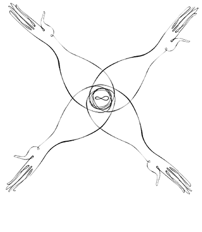
Sonsöz Yerine BU ÜLKENİN SOYLUSU
Vizit bittiğinde omuzlarımıza dinlediğimiz hikâyelerin ağırlığı çökmüştü. “Vizitimiz yine gazetelerin üçüncü sayfa haberlerinden bir demet gibiydi” dedim. Genç insanların yattığı bu klinikte, toplumun en diptekilerinin öykülerini dinliyorduk, hayır dinleyip geçemiyorduk, onların trajedisi bazen ruhumuza çöreklenip kalıyordu. Mülksüzlerin hikâyeleri, kurbanlığın en koyu kıvamlı kanından yazılıyordu, “Çürüyen bir şeyler var krallığımızda!” diye fısıldayan bir sesle, sessizliğin sesiyle. Yalnız psikiyatri kliniklerinde, karakollarda, yetiştirme yurtlarında, cezaevlerinde işitilen bir sesle.
Onları, o gençleri dinlemek, benim için bu ülkeye dokunmak demektir. Bu ülkede televizyon dizilerinden, şarkı kliplerinden, gelgeç şöhretlerden ötede başka bir hayat vardır. Bazen hüzünlü bitişler, bazen ümitli başlangıçlar, bazen de taşkın bir neşe gizleyen hikâyeler. Ancak bu gençlerden öğrendiğim bir şey, İstanbul’un yoksul mahallelerinde büsbütün huzursuz bir yeni gençliğin yetişmekte olduğudur. Hap kullanan, kendisini kesen, okula gitmek istemeyen, kısa yoldan hayata atılmak isteyen ve içinde bol kazanç ve iktidarın olduğu kocaman düşler kuran gençler. Kenarından bitişmeye çalıştıkları topluma karşı hınç dolu, babalarının yoksulluğundan duydukları öfkeyi, bir ateş gibi içlerinde gezdiren çocuklar. “Beni kimse sevmeyecek” korkusuyla her yere saldıran, her insandan, her topluluktan bir sevgi kırıntısı devşirmeye çalışan, yoksulluğun yırttığı ailelerin ele avuca sığmaz oğlan ve kızları.
Ruhun en güçlü ihtiyaçlarından birisi, topluluk ihtiyacıdır. Ruh bağlanmak için can atar; farklı kişilikler, yakınlık ve biriciklik için can atar. Ruhun aradığı, yekparelik ve benzerlik değil, toplumda zaten var olan renklilik ve çeşitliliktir. Bir kelebek gibi hangi çiçeklerle buluşup hangi renkle baştan çıkacağını seçmek ister. Var olmak, sırtını ötekine yaslayabilmektir.
Mitolojiler pek çok kültürde ortak bir hikâye anlatır: Ebeveynleri tarafından terk edilen özel çocuk, vahşi doğada veya koruyucu anne baba elinde büyür, pek de merhamet ve şefkat görmez. Zaman ve şartlara acımasızca maruz kalır. Fakat bu maruz kalıştır ki onu yeni ve daha güçlü bir insan kılar. Hayata maruz kalmak, hepimiz için bir tehdit ve bir fırsattır. Çok incinebilir olduğumuzu hissettiğimiz anlar, aynı zamanda hayatta yeni bir role geçebileceğimiz fırsat anlarıdır. Çocuk en savunmasız göründüğü anlardan bir kuvvet duygusuyla sıyrılabilir. Günümüzün çocukları bana mitolojilerdeki hikâyeyi hatırlatıyor: Anne babalarının pek de farkına varmadan cangıla saldıkları, hayatın vahşi yüzüyle ruh terbiyesi alan bir kuşak yetişiyor. Bu terbiye, onları belki daha dayanıklı kılıyor ama hiç kimseye minnet duymayan, hiçbir yerde dinlenip huzur bulmayan gençler, kendilerini yalnızca öfkeleriyle var ediyorlar. Ötekine öfke, sınıf arkadaşının kalbine saplanan hançerle kendisini gösteriyor; kendisine duyduğu öfke, yineleyen intihar girişimleri ve vücuduna açtığı jilet yaralarıyla.
Bir toplumsal seferberlik öneriyorum. Kanaat öderi sayılan kişilerin, medya şöhretlerinin, cemiyet sayfası gediklilerinin, kendilerini görünür kılan isimsiz kalabalığa ödemeleri gereken bir borç olduğunu düşünüyorum. Gençlerin olduğu her yere gitmeli, onları hapların koynundan almak için çaba harcamalı, ellerindeki jiletleri çekip almalı, onlara umut dolu mesajlar ulaştırmalılar. Devlet denen o büyük organizma, ‘gençleri hayattan soğutmak’ cürümüne karşı tetikte olmalı.
Toplumca bir umut seferberliğine ihtiyacımız var. Baksanıza, korku tacirleri yine işbaşında, durmadan korku ve kasvet havası yayıyorlar ortalığa. İstanbul’un ve diğer büyük şehirlerin ümitsizlikle zehirlenmiş yeni çocuklarına söyleyecek bir sözümüz, onlarla paylaşacak bir düşümüz olmalı. Başkalarını görmezden gelerek, onların ıstıraplarını yok sayarak, daracık evlerine istinat duvarlarıyla saldırarak var olamayız. Eğlendiğimiz, yeyip içtiğimiz mekânlar, bindiğimiz arabalar, taktığımız mücevherler bizi soylu kılmaz. Soyluluk ötekini işitebilmekten yapılma bir mücevherdir. Soylular, kalplerini bir mücevher gibi taşıyan ve kalpleriyle düşünen insanlardır. Bu ülkenin en soylu insanları, diğerlerinin acısını en çok içinde hissedenlerdir.
Özel İsim İndeksi
A. Hamdi Tanpınar; 35, 153
Adolf Eichmann; 53
Adolf Hitler; 58
Ahmet Haşim; 40, 153
Aldous Huxley; 83
Aleksandr Soljenitsin; 79
Aliya İzzetbegoviç; 175
Amartya Sen; 200, 201
André Gorz; 26
Arthur Schopenhauer; 180
Cervantes; 37
Daniel Boorstin; 187
Eflatun Nuri; 41
Ekber (Moğol hükümdarı); 201
Emmanuel Levinas; 173, 211
Erik Erikson; 104
Ernest Becker; 111
F. Mihailoviç Dostoyevski; 71
Franz Kafka; 180
Friedrich Nietzsche; 111
George Orwell; 208
Giordano Bruno; 201
Hannah Arendt; 53, 179
Hrant Dink; 207, 209
Hüsrev Hatemi; 109
Ivan Illich; 47
İbn Haldun; 216
İbn Meymun; 201
İsmet Özel; 110
Jacques Ellul; 156
Jane Elliot; 195
John Lennon; 33
Karen Blixen; 47
Ludwig Andreas Feuerbach; 38
Margaret Mead; 133
Martin Buber; 88
Martin Heiddeger; 41
Michael Bakhtin; 97
Michael Foucault ; 104
Milan Kundera; 40
Richard Sennet; 101
Robert Bly; 143
Rollo May; 68
Roy Bahmeister; 51
Selahaddin Eyyubi; 201
Sigmund Freud; 54, 130, 133
Søren Kierkegaard; 35, 115
Viktor Frankl; 43
Tevfik Fikret; 68
William Faulkner ; 71, 74
Winnicott; 125
Yunus Emre; 95, 173, 216
Zell Kravinsky; 79